Dive into Claude Code: The Design Space of Today's and Future AI Agent Systems
Jiacheng Liu¹ · Xiaohan Zhao¹ · Xinyi Shang^{1,2} · Zhiqiang Shen^{1,†}
¹ VILA Lab, Mohamed bin Zayed University of Artificial Intelligence ² University College London † Corresponding author: Zhiqiang.Shen@mbzuai.ac.ae
GitHub: https://github.com/VILA-Lab/Dive-into-Claude-Code
Abstract
Claude Code is an agentic coding tool that can run shell commands, edit files, and call external services on behalf of the user. This study describes its comprehensive architecture by analyzing the publicly available TypeScript source code (v2.1.88) and further comparing it with OpenClaw, an independent open-source AI agent system that answers many of the same design questions from a different deployment context.
Our analysis identifies five human values, philosophies, and needs that motivate the architecture (human decision authority, safety and security, reliable execution, capability amplification, and contextual adaptability) and traces them through thirteen design principles to specific implementation choices. The core of the system is a simple while-loop that calls the model, runs tools, and repeats. Most of the code, however, lives in the systems around this loop: a permission system with seven modes and an ML-based classifier, a five-layer compaction pipeline for context management, four extensibility mechanisms (MCP, plugins, skills, and hooks), a subagent delegation and orchestration mechanism, and append-oriented session storage.
A comparison with OpenClaw, a multi-channel personal assistant gateway, shows that the same recurring design questions produce different architectural answers when the deployment context changes: from per-action safety evaluation to perimeter-level access control, from a single CLI loop to an embedded runtime within a gateway control plane, and from context-window extensions to gateway-wide capability registration. We finally identify six open design directions for future agent systems, grounded in recent empirical, architectural, and policy literature.
Disclaimer: All materials used in this work are obtained from publicly available online sources. We have not used any private, confidential, or unauthorized materials, and we do not intend to infringe any copyright or intellectual property rights. The original intellectual property rights to the source code belong to Anthropic.
1. Introduction
AI-assisted software development has evolved from autocomplete-style tools such as GitHub Copilot, through IDE-integrated assistants like Cursor, to fully agentic systems that autonomously plan multi-step modifications, execute shell commands, read and write files, and iterate on their own outputs. Claude Code is an agentic coding tool released by Anthropic. Its official documentation describes an "agentic loop" that plans and executes actions toward accomplishing a goal and can call tools, evaluate results, and continue until the task is done. This shift from suggestion to autonomous action introduces architectural requirements that have no counterpart in completion-based tools. These requirements define a design space — a set of recurring questions spanning topics such as safety, context management, extensibility, and delegation that every coding agent must navigate. This study uses source-level analysis of Claude Code to show how one production system answers these questions.
Despite growing adoption, Anthropic publishes user-facing documentation for Claude Code but not detailed architectural descriptions. This study uses source code analysis to describe architectural design decisions. Anthropic's internal survey of 132 engineers and researchers reports that about 27% of Claude Code-assisted tasks were work that would not have been attempted without the tool, suggesting that the architecture enables qualitatively new workflows rather than merely accelerating existing ones.
In this work, we first identify five human values/philosophies and thirteen design principles that motivate the architecture (Section 2), then organize the analysis in three parts:
Design-space analysis. We identify recurring design questions (where reasoning lives, how the iteration loop is structured, what safety posture to adopt, how the extension surface is partitioned, how context is managed, how work is delegated across subagents, and how sessions persist) and analyze Claude Code's answers through a 7-component high-level structure and a 5-layer subsystem architecture, tracing each choice to specific source files (Section 3). The analysis aims to build a deep understanding of the system mechanism, with the goal of informing the design of better and more powerful agent systems.
Architectural contrast with OpenClaw. Beyond analyzing Claude Code itself, we also compare its design philosophy with that of open-source agent system OpenClaw, a multi-channel personal assistant gateway, across six design dimensions to show how the same recurring questions produce different answers under different deployment contexts (Section 10). This comparison helps reveal how deployment setting, product goals, safety requirements, and user assumptions shape architectural choices in different ways.
Open directions for future agent systems. Building on the design-space analysis and the OpenClaw contrast, Section 12 identifies six open directions spanning the observability-evaluation gap, cross-session persistence, harness boundary evolution, horizon scaling, governance, and the evaluative lens, each drawing on empirical, architectural, and policy literature.
The core agent loop is a while-true cycle with state management. The surrounding subsystems for safety, extensibility, context management, delegation, and persistence make up the bulk of the implementation. Source-level analysis allows us to identify design choices, subsystem boundaries, and implementation trade-offs directly from the system itself rather than inferring them solely from product descriptions.
Running example. To keep the architecture concrete, we trace the task "Fix the failing test in auth.test.ts" throughout Sections 3–9. This example illustrates how a seemingly simple user request activates multiple architectural layers, including tool invocation, permission checks, context selection, iterative repair, delegation, and session persistence.
Paper organization. Section 2 identifies the human values and design principles that motivate the architecture. Section 3 introduces the high-level architecture and the design questions it answers. Sections 4–9 each analyze a major subsystem's design choices. Section 10 contrasts the analysis with OpenClaw. Section 11 provides discussion, and Section 12 surveys open questions for future agent systems. Sections 13 and 14 cover related work and conclusions. The appendix describes the evidence base and methodology.
2. Design Philosophies, Design Principles and Architectural Motivations
Production coding agents are built by humans, for humans, and the architectural decisions they embed reflect what their creators believe matters. This section identifies the human values that motivate Claude Code's design, traces them through recurring design principles, and frames the design-space questions that organize the rest of the analysis.
Anthropic's framework for safe agents states a central tension: "Agents must be able to work autonomously; their independent operation is exactly what makes them valuable. But humans should retain control over how their goals are pursued." Claude's Constitution resolves this not through rigid decision procedures but by cultivating "good judgment and sound values that can be applied contextually." These commitments, together with empirical findings about how developers actually use the tool, point to five human values that shape the architecture.
2.1 Five Values and Philosophies
Human Decision Authority. The human retains ultimate decision authority over what the system does, organized through a principal hierarchy (Anthropic, then operators, then users) that formalizes who holds authority over what. The system is designed so that humans can exercise informed control: they can observe actions in real time, approve or reject proposed operations, interrupt compatible in-progress operations, and audit after the fact. When Anthropic found that users approve 93% of permission prompts, the response was not to add more warnings but to restructure the problem: defined boundaries (sandboxing, auto-mode classifiers) within which the agent can work freely, rather than per-action approvals that users stop reviewing once habituated.
Safety, Security, and Privacy. The system protects humans, their code, their data, and their infrastructure from harm, even when the human is inattentive or makes mistakes. This is distinct from Human Decision Authority: where authority is about the human's power to choose, safety is about the system's obligation to protect even when that power lapses. Anthropic's safe-agents framework separately identifies securing agent interactions and protecting privacy across extended interactions as core commitments. The auto-mode threat model explicitly targets four risk categories: overeager behavior, honest mistakes, prompt injection, and model misalignment.
Reliable Execution. The agent does what the human actually meant, stays coherent over time, and supports verifying its work before declaring success. This value spans both single-turn correctness (did it interpret the request faithfully?) and long-horizon dependability (does it remain coherent across context window boundaries, session resumption, and multi-agent delegation?). Anthropic's product documentation describes a three-phase loop that the agent repeats until the task is complete: gather context, take action, and verify results. The agent design guidance further emphasizes that "ground truth from the environment" at each step assesses progress. The harness-design guidance likewise notes that "agents tend to respond by confidently praising the work," even when quality is mediocre, motivating separation of generation from evaluation.
Capability Amplification. The system materially increases what the human can accomplish per unit of effort and cost. Approximately 27% of tasks represented work that would not otherwise have been attempted. The system is described by its creators as "a Unix utility rather than a traditional product," built from the smallest building blocks that are "useful, understandable, and extensible." The architecture invests in deterministic infrastructure (context management, tool routing, recovery) rather than decision scaffolding (explicit planners or state graphs), on the premise that increasingly capable models benefit more from a rich operational environment than from frameworks that constrain their choices.
Contextual Adaptability. The system fits the user's specific context (their project, tools, conventions, and skill level) and the relationship improves over time. The extension architecture (CLAUDE.md, skills, MCP, hooks, plugins) provides configurability at multiple levels of context cost. Longitudinal data shows that the human-agent relationship evolves: auto-approve rates increase from approximately 20% at fewer than 50 sessions to over 40% by 750 sessions. This pattern, described as autonomy that is "co-constructed by the model, the user, and the product," means the system is designed for trust trajectories rather than fixed trust states.
2.2 Design Principles
These values are operationalized through thirteen design principles, each answering a recurring question that production coding agents must resolve.
| Principle | Values Served | Design Question | Sections |
|---|---|---|---|
| Deny-first with human escalation | Authority, Safety | Should unrecognized actions be allowed, blocked, or escalated to the human? | §5, §8, §9 |
| Graduated trust spectrum | Authority, Adaptability | Fixed permission level, or a spectrum users traverse over time? | §5 |
| Defense in depth with layered mechanisms | Safety, Authority, Reliability | Single safety boundary, or multiple overlapping ones using different techniques? | §3, §5 |
| Externalized programmable policy | Safety, Authority, Adaptability | Hardcoded policy, or externalized configs with lifecycle hooks? | §5, §6 |
| Context as scarce resource with progressive management | Reliability, Capability | What is the binding resource constraint, and how to manage it: single-pass truncation or graduated pipeline? | §4, §6, §7, §8 |
| Append-only durable state | Reliability, Authority | Mutable state, checkpoint snapshots, or append-only logs? | §4, §9 |
| Minimal scaffolding, maximal operational harness | Capability, Reliability | Invest in scaffolding-side reasoning, or operational infrastructure that lets the model reason freely? | §3, §4 |
| Values over rules | Capability, Authority | Rigid decision procedures, or contextual judgment backed by deterministic guardrails? | §3, §5, §7 |
| Composable multi-mechanism extensibility | Capability, Adaptability | One unified extension API, or layered mechanisms at different context costs? | §6 |
| Reversibility-weighted risk assessment | Capability, Safety | Same oversight for all actions, or lighter for reversible and read-only ones? | §4, §5, §8 |
| Transparent file-based configuration and memory | Adaptability, Authority | Opaque database, embedding-based retrieval, or user-visible version-controllable files? | §7 |
| Isolated subagent boundaries | Reliability, Safety, Capability | Subagents share the parent's context and permissions, or operate in isolation? | §8 |
| Graceful recovery and resilience | Reliability, Capability | Fail hard on errors, or silently recover and reserve human attention for unrecoverable situations? | §4, §5 |
These principles can be read against three major alternative design families. First, rule-based orchestration: frameworks such as LangGraph encode decision logic as explicit state graphs with typed edges, choosing scaffolding over minimal harness. Second, container-isolated execution: SWE-Agent and OpenHands rely on Docker isolation rather than layered policy enforcement. Third, version-control-as-safety: tools like Aider use Git rollback as the primary safety mechanism rather than deny-first evaluation. Claude Code's principle set is distinctive in combining minimal decision scaffolding with layered policy enforcement, values-based judgment with deny-first defaults, and progressive context management with composable extensibility.
2.3 From Values to Architecture
Each value traces through its principles to specific architectural decisions:

Human Decision Authority motivates deny-first evaluation, the graduated trust spectrum, append-only state (auditable history), externalized programmable policy, and values-over-rules (Sections 5, 9, 6, 7).
Safety, Security, and Privacy motivates defense in depth, deny-first defaults, reversibility-weighted assessment, externalized policy, and isolated subagent boundaries (Sections 5, 8).
Reliable Execution motivates context-as-scarce-resource, append-only durable state, graceful recovery, isolated subagent boundaries, and defense in depth (Sections 4, 7, 8, 9).
Capability Amplification motivates minimal scaffolding, composable extensibility, reversibility-weighted risk, context management, and graceful recovery (Sections 4, 6, 5).
Contextual Adaptability motivates transparent file-based memory, composable extensibility, the graduated trust spectrum, and externalized programmable policy (Sections 7, 6, 5).
These mappings also reveal what the architecture does not do: it does not impose explicit planning graphs on the model's reasoning, does not provide a single unified extension mechanism, and does not restore all session-scoped trust-related state across resume. These absences are consistent with the principle set above.
2.4 An Evaluative Lens: Long-term Capability Preservation
The five values above describe what the architecture is designed to serve. This paper also applies a sixth concern — whether the architecture preserves long-term human capability — as an evaluative lens. This concern is real: Anthropic's own study of 132 engineers and researchers documents a "paradox of supervision" in which overreliance on AI risks atrophying the skills needed to supervise it, and independent research finds that developers in AI-assisted conditions score 17% lower on comprehension tests. However, this concern is not prominently reflected as a design driver in the architecture or in Anthropic's stated design values. We therefore treat it not as a co-equal value but as a cross-cutting concern: a question applied across all five values in Section 11, asking whether short-term amplification comes at the cost of long-term human understanding, codebase coherence, and the developer pipeline.
3. Architecture Overview
Claude Code's architecture can be read as one set of answers to a recurring set of design questions. At the implementation level, the system has seven components connected by a main data flow: a user submits a prompt through one of several interfaces, which feeds into a shared agent loop. The agent loop assembles context, calls the Claude model, receives responses that may include tool-use requests, routes those requests through a permission system, and dispatches approved actions to concrete tools that interact with the execution environment. Throughout this process, state and persistence mechanisms record the conversation transcript, manage session identity, and support resume, fork, and rewind operations.
3.1 Design Questions and Running Example
The description is organized around four design questions that recur across production coding agents, each grounding one or more of the design principles in Section 2.
Where does reasoning live?
In Claude Code, the model reasons about what to do; the harness is responsible for executing actions. The model emits tool_use blocks as part of its response, and the harness parses them, checks permissions, dispatches them to tool implementations, and collects results (query.ts). The model never directly accesses the filesystem, runs shell commands, or makes network requests. This separation has a security consequence: because reasoning and enforcement occupy separate code paths, a compromised or adversarially manipulated model cannot override the sandboxing, permission checks, or deny-first rules implemented in the harness. The model's only interface to the outside world is the structured tool_use protocol, which the harness validates before execution. Community analysis of the extracted source estimates that only about 1.6% of Claude Code's codebase constitutes AI decision logic, with the remaining 98.4% being operational infrastructure — a ratio that illustrates how thin the core agent reasoning layer is. Alternative designs invest more heavily in scaffolding-side reasoning: Devin maintains explicit planning and task-tracking structures, while LangGraph routes control flow through developer-defined state graphs.
How many execution engines?
Claude Code uses a single queryLoop() function that executes regardless of whether the user is interacting through an interactive terminal, a headless CLI invocation, the Agent SDK, or an IDE integration (query.ts). Only the rendering and user-interaction layer varies. Other systems use mode-specific engines — for example, an IDE integration may follow a different code path than a CLI tool, trading uniformity for surface-specific optimization.
What is the default safety posture?
Claude Code's default safety posture is deny-first with human escalation: deny rules override ask rules override allow rules, and unrecognized actions are escalated to the user rather than allowed silently (permissions.ts). Multiple independent safety layers (permission rules, PreToolUse hooks, the auto-mode classifier when enabled, and optional shell sandboxing) apply in parallel, so any one can block an action (Section 5). This combines the deny-first with human escalation and defense in depth with layered mechanisms principles. Alternative approaches shift the trust boundary elsewhere: SWE-Agent and OpenHands rely on container-based isolation to contain arbitrary execution, while Aider uses git-based rollback as its primary safety net.
What is the binding resource constraint?
In Claude Code, the context window (200K for older models, 1M for the Claude 4.6 series) is the binding resource constraint. Five distinct context-reduction strategies execute before every model call (query.ts), and several other subsystem decisions (lazy loading of instructions, deferred tool schemas, summary-only subagent returns) exist to limit context consumption (Section 7). The five-layer pipeline exists because no single compaction strategy addresses all types of context pressure:
Budget reduction targets individual tool outputs that overflow size limits.
Snip handles temporal depth.
Microcompact reacts to cache overhead.
Context collapse manages very long histories.
Auto-compact performs semantic compression as a last resort.
Each layer operates at a different cost-benefit tradeoff, and earlier, cheaper layers run before costlier ones.

Running example. The task "Fix the failing test in auth.test.ts" is used throughout to ground the architecture: in this section the user submits the prompt through one of Claude Code's interfaces; subsequent sections trace the request through the query loop, permission gate, tool pool, context window, subagent delegation, and session persistence.
3.2 High-Level System Structure
The seven-component model maps directly to source files:
User: Submits prompts, approves permissions, reviews output.
Interfaces: Interactive CLI, headless CLI (
claude -p), Agent SDK, and IDE/Desktop/Browser. All surfaces feed the same loop.Agent loop: The iterative cycle of model call, tool dispatch, and result collection, implemented as the
queryLoop()async generator inquery.ts.Permission system: Deny-first rule evaluation (
permissions.ts), the auto-mode ML classifier, and hook-based interception (types/hooks.ts).Tools: Up to 54 built-in tools (19 unconditional, 35 conditional on feature flags and user type) assembled via
assembleToolPool()(tools.ts), merged with MCP-provided tools. Plugins contribute indirectly through MCP servers and the skill/command registry.State & persistence: Mostly append-only JSONL session transcripts (
sessionStorage.ts), global prompt history (history.ts), and subagent sidechain files.Execution environment: Shell execution with optional sandboxing (
shouldUseSandbox.ts), filesystem operations, web fetching, MCP server connections, and remote execution.
The data flow follows a left-to-right spine: the user submits a request through an interface, which enters the agent loop. The loop proposes actions to the permission system; approved actions reach tools, which interact with the execution environment and return tool_result messages back to the loop. State and persistence sit alongside the loop, recording transcripts and loading prior session data.
The application entry point main() in main.tsx initializes security settings (including NoDefaultCurrentDirectoryInExePath to prevent Windows PATH hijacking), registers signal handlers for graceful shutdown, and dispatches to the appropriate execution mode.

Figure 3: Expanded layered architecture showing five subsystem layers: surface (Interactive CLI, Headless CLI, Agent SDK, IDE/Desktop/Browser, UI/renderer), core (agent loop, compaction pipeline), safety/action (permission system incl. auto-mode classifier, hook pipeline, extensibility, built-in tools, MCP tools, shell sandbox, subagent spawning), state (context assembly, runtime state, session persistence, CLAUDE.md + memory, sidechain transcripts), and backend (execution backends, external resources).
3.3 Layered Subsystem Decomposition
The five-layer decomposition expands the seven-component model into a finer-grained view, mapping each layer to specific source directories.
Surface layer (entry points and rendering).
The src/entrypoints/ directory contains startup paths, including the SDK entry with coreTypes.ts, controlSchemas.ts, and coreSchemas.ts. The src/screens/ directory composes full-screen layouts, and src/components/ provides terminal UI building blocks via the ink framework. The interactive CLI launches a terminal UI with real-time streaming, permission dialogs, and progress indicators. The headless CLI (claude -p) creates a QueryEngine instance for single-shot processing. The Agent SDK emits typed events via async generators.
Core layer (agent loop, compaction pipeline).
The queryLoop() async generator (query.ts) implements the iterative agent loop, consuming assembled context from the state layer and dispatching tool requests to the safety/action layer. Before every model call, a compaction pipeline of five sequential shapers (query.ts:365–453) manages context pressure: budget reduction, snip, microcompact, context collapse, and auto-compact (Sections 4 and 7).
Safety/action layer (permission system, hooks, extensibility, tools, sandbox, subagents).
The permission system (permissions.ts) implements deny-first rule evaluation with up to seven permission modes (types/permissions.ts) and an integrated auto-mode ML classifier (yoloClassifier.ts) that provides a two-stage fast-filter and chain-of-thought evaluation of tool safety (Section 5). A hook pipeline spanning 27 event types (coreTypes.ts; output schemas in types/hooks.ts) can block, rewrite, or annotate tool requests; of these, 5 are safety-related while the remaining 22 serve lifecycle and orchestration purposes (Section 6). An extensibility subsystem allows plugins and skills to register tools and hooks into the runtime. Tool pool assembly via assembleToolPool() (tools.ts) merges built-in and MCP-provided tools. Approved shell commands pass through a shell sandbox (shouldUseSandbox.ts) that restricts filesystem and network access independently of the permission system. Subagent spawning via AgentTool (AgentTool.tsx, runAgent.ts) is dispatched through the same buildTool() factory as all other tools, re-entering the queryLoop() with an isolated context window and returning only a summary to the parent (Section 8).
State layer (context assembly, runtime state, persistence, memory, sidechains).
Context assembly is a memoized state loader, not a routing hub: getSystemContext() (context.ts) computes session-level system context including git status, and getUserContext() (context.ts) loads the CLAUDE.md hierarchy and current date. Both are cached for reuse. The src/state/ directory manages runtime application state. Session transcripts are stored as mostly append-only JSONL files at project-specific paths (sessionStorage.ts). The CLAUDE.md + memory subsystem provides a four-level instruction hierarchy (claudemd.ts) from managed settings to directory-specific files, plus auto-memory entries that Claude writes during conversations (Section 7). Sidechain transcripts (sessionStorage.ts:247) store each subagent's conversation in a separate file, preventing subagent content from inflating the parent context (Section 8). Global prompt history is maintained in history.jsonl (history.ts). Resume and fork operations reconstruct session state from transcripts (conversationRecovery.ts).
Backend layer (execution backends, external resources).
Shell command execution with optional sandboxing (BashTool.tsx, PowerShellTool.tsx), remote execution support (src/remote/), MCP server connections across multiple transport variants including stdio, SSE, HTTP, WebSocket, SDK, and IDE-specific adapters (services/mcp/client.ts), and 42 tool subdirectories in src/tools/ implement concrete tool logic.
3.4 QueryEngine: A Clarification
The class documentation at QueryEngine.ts states: "QueryEngine owns the query lifecycle and session state for a conversation. It extracts the core logic from ask() into a standalone class that can be used by both the headless/SDK path and (in a future phase) the REPL." The class is a conversation wrapper for non-interactive surfaces, not the engine itself. Its constructor accepts a QueryEngineConfig with initial messages, an abort controller, a file-state cache, and other per-conversation state. Its submitMessage() method is an async generator that orchestrates a single turn. The shared query path lives in query() (query.ts), which wraps an internal queryLoop(); QueryEngine delegates to query().
This distinction matters architecturally: the interactive CLI also calls query(), bypassing QueryEngine entirely. The shared code path is the loop function, not the engine class.
3.5 Permission and Safety Layers
The safety-by-default principle is implemented through seven independent layers. A request must pass through all applicable layers, and any single layer can block it:
Tool pre-filtering (
tools.ts): Blanket-denied tools are removed from the model's view before any call, preventing the model from attempting to invoke them.Deny-first rule evaluation (
permissions.ts): Deny rules always take precedence over allow rules, even when the allow rule is more specific.Permission mode constraints (
types/permissions.ts): The active mode determines baseline handling for requests matching no explicit rule.Auto-mode classifier: An ML-based classifier evaluates tool safety, potentially denying requests the rule system would allow.
Shell sandboxing (
shouldUseSandbox.ts): Approved shell commands may still execute inside a sandbox restricting filesystem and network access.Not restoring permissions on resume (
conversationRecovery.ts): Session-scoped permissions are not restored on resume or fork.Hook-based interception (
types/hooks.ts): PreToolUse hooks can modify permission decisions; PermissionRequest hooks can resolve decisions asynchronously alongside the user dialog (or before it, in coordinator mode).
These layers are described in detail in Section 5.
3.6 Context as Bottleneck: Beyond Compaction
Beyond the five-layer compaction pipeline (detailed in Section 7), several other subsystem decisions reflect the context-as-bottleneck constraint:
CLAUDE.md lazy loading: The base CLAUDE.md hierarchy is loaded at session start, but additional nested-directory instruction files and conditional rules are loaded only when the agent reads files in those directories, preventing unused instructions from consuming context.
Deferred tool schemas: When ToolSearch is enabled, some tools include only their names in the initial context; full schemas are loaded on demand.
Subagent summary-only return: Subagents return only summary text to the parent, not their full conversation history (Section 8).
Per-tool-result budget: Individual tool results are capped at a configurable size, preventing a single verbose output from consuming disproportionate context.
4. Turn Execution: The Agentic Query Loop
When the user submits "Fix the failing test in auth.test.ts," the input enters a reactive loop — one of several possible orchestration patterns for coding agents. This section examines Claude Code's choice of a simple while-loop architecture and traces one turn of that loop end-to-end, illustrating three design principles: minimal scaffolding with maximal operational harness, context as scarce resource with progressive management, and graceful recovery and resilience.
4.1 The Query Pipeline
Each turn follows a fixed sequence (query.ts):
Settings resolution. The
queryLoop()function destructures immutable parameters including the system prompt, user context, permission callback, and model configuration.Mutable state initialization. A single
Stateobject stores all mutable state across iterations, including messages, tool context, compaction tracking, and recovery counters. The loop's sevencontinuepoints (the "continue sites") each overwrite this object in one whole-object assignment rather than mutating fields individually.Context assembly. The function
getMessagesAfterCompactBoundary()retrieves messages from the last compact boundary forward, ensuring that compacted content is represented by its summary rather than the original messages.Pre-model context shapers. Five shapers execute sequentially (Section 4.3).
Model call. A
for awaitloop overdeps.callModel()streams the model's response, passing assembled messages (with user context prepended), the full system prompt, thinking configuration, the available tool set, an abort signal, the current model specification, and additional options including fast-mode settings, effort value, and fallback model.Tool-use dispatch. If the response contains
tool_useblocks, they flow to the tool orchestration layer (Section 4.2).Permission gate. Each tool request passes through the permission system (Section 5).
Tool execution and result collection. Tool results are added to the conversation as
tool_resultmessages, and the loop continues.Stop condition. If the response contains no
tool_useblocks (text only), the turn is complete.
The queryLoop() function is defined as an AsyncGenerator, yielding StreamEvent, RequestStartEvent, Message, TombstoneMessage, and ToolUseSummaryMessage events as it progresses. This generator-based design enables streaming output to the UI layer while maintaining a single synchronous control flow within the loop.
Claude Code's reactive loop follows the ReAct pattern: the model generates reasoning and tool invocations, the harness executes actions, and results feed the next iteration. Alternative orchestration patterns include explicit graph-based routing (LangGraph), where control flow is defined as a state machine with typed edges, and tree-search methods (LATS) that explore multiple action trajectories before committing. Anthropic's own documentation identifies five composable workflow patterns — prompt chaining, routing, parallelization, orchestrator-workers, and evaluator-optimizer — of which Claude Code primarily uses the orchestrator-workers pattern for subagent delegation (Section 8) while keeping the core loop reactive. The reactive design trades search completeness for simplicity and latency: each turn commits to one action sequence without backtracking.
4.2 Tool Dispatch and Streaming Execution
When the model response contains tool_use blocks, the system chooses between two execution paths. The primary path uses StreamingToolExecutor, which begins executing tools as they stream in from the model response, reducing latency for multi-tool responses. The fallback path uses runTools() in toolOrchestration.ts, which iterates over partitions produced by partitionToolCalls(). Both paths classify tools as concurrent-safe or exclusive. Read-only operations can execute in parallel, while state-modifying operations like shell commands are serialized.
The StreamingToolExecutor (StreamingToolExecutor.ts) manages concurrent execution with two coordination mechanisms:
Sibling abort controller. Fires when any Bash tool errors, immediately terminating other in-flight subprocesses rather than letting them run to completion.
Progress-available signal. Wakes up the
getRemainingResults()consumer when new output is ready.
Results are buffered and emitted in the order tools were received, so output order stays the same even when tools run in parallel. This is important because the model expects tool results in the same order as its tool-use requests. This concurrent-read, serial-write execution model occupies a middle ground between fully serial dispatch and more aggressive speculative approaches such as PASTE, which speculatively pre-executes predicted future tool calls while the model is still generating, hiding tool latency through speculation.
The tool result collection phase iterates over updates from either the streaming executor or the synchronous runTools() generator. Each update may carry a tool result, an attachment, or a progress event. A special check detects hook_stopped_continuation attachments: if a PostToolUse hook signals that the turn should not continue, a shouldPreventContinuation flag is set. Results are normalized for the Anthropic API via normalizeMessagesForAPI(), filtering to keep only user-type messages.
4.3 Pre-Model Context Shapers
Five context shapers execute sequentially in query.ts before every model call, each operating on the messagesForQuery array. The five shapers run in sequence, with earlier steps applying lighter reductions before later steps apply broader compaction.
Budget reduction (applyToolResultBudget()).
Enforces per-message size limits on tool results, replacing oversized outputs with content references. Exempt tools (those where maxResultSizeChars is not finite) retain their full output. Content replacements are persisted for agent and session query sources to enable reconstruction on resume. Budget reduction runs before microcompact because microcompact operates purely by tool_use_id and never inspects content; the two compose cleanly.
Snip (snipCompactIfNeeded(), gated by HISTORY_SNIP).
A lightweight trim that removes older history segments, returning {messages, tokensFreed, boundaryMessage}. The snipTokensFreed value is plumbed to auto-compact because the main token counter derives context size from the usage field on the most recent assistant message, and that message survives snip with its pre-snip input_tokens still attached; snip's savings are therefore invisible to the counter unless passed through explicitly.
Microcompact.
Fine-grained compression that always runs a time-based path and optionally a cache-aware path (gated by CACHED_MICROCOMPACT). When the cached path is enabled, boundary messages are deferred until after the API response so they can use actual cache_deleted_input_tokens rather than estimates. Returns {messages, compactionInfo} where compactionInfo may include pendingCacheEdits.
Context collapse (gated by CONTEXT_COLLAPSE).
A read-time projection over the conversation history. The source comments explain: "Nothing is yielded; the collapsed view is a read-time projection over the REPL's full history. Summary messages live in the collapse store, not the REPL array. This is what makes collapses persist across turns." Unlike the other shapers, context collapse does not mutate the REPL's stored history; it replaces the messagesForQuery array with a projected view via applyCollapsesIfNeeded(), so the model sees the collapsed version while the full history remains available for reconstruction.
Auto-compact.
The fifth and final shaper, triggering a full model-generated summary via compactConversation() in compact.ts. This function executes PreCompact hooks, creates a summary request using getCompactPrompt(), and calls the model to produce a compressed summary. The result feeds into buildPostCompactMessages(). Auto-compact fires only when the context still exceeds the pressure threshold after all four previous shapers have run.
4.4 Recovery Mechanisms
The query loop implements several recovery mechanisms for edge cases:
Max output tokens escalation: When the response hits the output token cap, the system can retry with an escalated limit, subject to a GrowthBook flag and the absence of an existing override or environment-variable cap. Up to three recovery attempts are allowed per turn (
MAX_OUTPUT_TOKENS_RECOVERY_LIMIT = 3).Reactive compaction (gated by
REACTIVE_COMPACT): When the context is near capacity, reactive compact summarizes just enough to free space. ThehasAttemptedReactiveCompactflag ensures this fires at most once per turn.Prompt-too-long handling: If the API returns a
prompt_too_longerror, the loop first attempts context-collapse overflow recovery and reactive compaction. Only after these fail does it terminate withreason: 'prompt_too_long'.Streaming fallback: The
onStreamingFallbackcallback handles streaming API issues, allowing the loop to retry with a different strategy.Fallback model: The
fallbackModelparameter enables switching to an alternative model if the primary model fails.
4.5 Stop Conditions
Multiple conditions can terminate the loop:
No tool use: The model produces only text content (the primary stop condition).
Max turns: The configurable
maxTurnslimit is reached.Context overflow: The API returns
prompt_too_long.Hook intervention: A PostToolUse hook sets
hook_stopped_continuation.Explicit abort: The
abortControllersignal fires.
The turn pipeline determines how tool requests are orchestrated and recovered. The next section examines the gate that determines whether each request is permitted to execute at all.
5. Tool Authorization and Control Boundaries
Production coding agents adopt different safety architectures: layered policy enforcement, OS-level sandboxing, or version-control-based rollback. Claude Code combines the first two, implementing four design principles: deny-first with human escalation, graduated trust spectrum, defense in depth with layered mechanisms, and reversibility-weighted risk assessment.
When Claude decides to execute a tool (for example, running npm test via BashTool to reproduce the auth test failure), the request enters the permission pipeline. Every tool invocation passes through the permission system, and the default behavior is to deny or ask rather than allow silently. This default is motivated by a documented behavioral pattern: Anthropic's auto-mode analysis found that users approve approximately 93% of permission prompts, indicating that approval fatigue renders interactive confirmation behaviorally unreliable as a sole safety mechanism. Because users habitually approve without careful review, the system must maintain safety independently of human vigilance. This motivates the architectural commitment to deny-first evaluation, blanket-deny pre-filtering, and sandboxing as independent layers that operate regardless of user attentiveness.

Permission gate design principles:
| Principle | Description |
|---|---|
| Progressive Trust | The agent starts with minimal autonomy; users expand it by approving tool invocations that become permanent rules. |
| Deny-First, Ask-by-Default | Deny rules always win, even under looser modes. If no rule matches, the gate asks the user instead of silently running or blocking. |
| Composable Policy | Three mechanisms shape policy: declarative rules, global trust modes, and programmable hooks, each independently configurable. |
5.1 Permission Modes and Rule Evaluation
Seven permission modes exist across the type definitions (5 external modes at types/permissions.ts; auto added conditionally; bubble in the type union):
plan: The model must create a plan; execution proceeds only after user approval.default: Standard interactive use. Most operations require user approval.acceptEdits: Edits within the working directory and certain filesystem shell commands (mkdir,rmdir,touch,rm,mv,cp,sed) are auto-approved; other shell commands require approval.auto: An ML-based classifier evaluates requests that do not pass fast-path checks (gated byTRANSCRIPT_CLASSIFIER).dontAsk: No prompting, but deny rules are still enforced.bypassPermissions: Skips most permission prompts, but safety-critical checks and bypass-immune rules still apply.bubble: Internal-only mode for subagent permission escalation to the parent terminal.
The five externally visible modes (acceptEdits, bypassPermissions, default, dontAsk, plan) are defined in the EXTERNAL_PERMISSION_MODES array. The auto mode is conditionally included only when the TRANSCRIPT_CLASSIFIER feature flag is active. The bubble mode exists in the type union but not in either mode array; it is used internally for subagent permission escalation (Section 8).
Permission rules are evaluated in deny-first order (permissions.ts). The toolMatchesRule() function checks deny rules first: a deny rule always takes precedence over an allow rule, even when the allow rule is more specific. A broad deny ("deny all shell commands") cannot be overridden by a narrow allow ("allow npm test"). The rule system supports tool-level matching (by tool name) and content-level matching (matching specific tool input patterns, such as Bash(prefix:npm)).
The seven modes span a graduated autonomy spectrum, from plan (user approves all plans before execution) through default and acceptEdits to bypassPermissions (minimal prompting). This gradient reflects a recurring design tension: as autonomy increases, the system must shift from interactive approval to automated safety checks. Other agent systems resolve this tension differently. SWE-Agent and OpenHands use Docker container isolation, sandboxing the agent's entire execution environment rather than evaluating individual tool invocations. Aider relies on Git as a safety net, making all changes reversible through version control. Claude Code's approach layers multiple policy-enforcement mechanisms on top of optional container sandboxing, trading simplicity for fine-grained control over individual actions.
5.2 The Authorization Pipeline
The full authorization pipeline proceeds through several stages.
Pre-filtering.
Before any tool request reaches runtime evaluation, filterToolsByDenyRules() (tools.ts) strips blanket-denied tools from the model's view entirely at tool pool assembly time. The documentation states: "Uses the same matcher as the runtime permission check, so MCP server-prefix rules like mcp__server strip all tools from that server before the model sees them." This prevents the model from attempting to invoke forbidden tools, so the model does not waste calls on them.
PreToolUse hook.
Registered hooks fire as part of the permission pipeline. A PreToolUse hook can return a permissionDecision to deny or ask, or an updatedInput that modifies the tool's input parameters (types/hooks.ts). A hook allow does not bypass subsequent rule-based denies or safety checks. In the interactive path, the user dialog is queued first and hooks run asynchronously; coordinator and similar background-agent paths await automated checks before showing the dialog.
Rule evaluation.
The deny-first rule engine evaluates the request. MCP tools are matched by their fully qualified mcp__server__tool name, and server-level rules match all tools from that server.
Permission handler.
The handler in useCanUseTool.tsx branches into one of four paths based on runtime context:
Coordinator: For multi-agent coordination mode. Attempts automated resolution (classifier, hooks, rules) before falling back to user interaction.
Swarm worker: Handles worker agents in a multi-agent swarm with their own resolution logic.
Speculative classifier: When
BASH_CLASSIFIERis enabled and the tool is BashTool, a speculative classifier races a pre-started classification result against a timeout. If the classifier returns with high confidence, the tool is approved instantly without user interaction.Interactive: The fallback path. Presents the standard user approval dialog through the terminal UI.
In coordinator and some background paths, automated resolution is attempted before user interaction. In the standard interactive path, the dialog can appear first while hooks or classifier checks continue in parallel. When the classifier or a deny rule blocks an action, the system treats the denial as a routing signal rather than a hard stop: the model receives the denial reason, revises its approach, and attempts a safer alternative in the next loop iteration. The PermissionDenied hook event (Section 6) enables external code to observe and respond to these denials programmatically. This recovery-oriented design means that permission enforcement shapes the agent's behavior rather than simply halting it.
5.3 Auto-Mode Classifier and Hook Lifecycle
The auto-mode classifier (yoloClassifier.ts) participates in permission decisions when enabled. When TRANSCRIPT_CLASSIFIER is enabled, the classifier loads three prompt resources:
A base system prompt.
An external permissions template.
For Anthropic-internal users, a separate internal template.
The classifier evaluates the proposed tool invocation against the conversation transcript and the permission template, producing an allow, deny, or request for manual approval. The function isUsingExternalPermissions() checks USER_TYPE and a forceExternalPermissions config flag to select the appropriate template.
Of the 27 hook events defined in the source (coreTypes.ts), five participate directly in the permission flow, each with a specific Zod-validated output schema (types/hooks.ts):
PreToolUse: Can return
permissionDecision(deny or ask, but allow does not bypass subsequent checks),permissionDecisionReason, andupdatedInput(modify parameters).PostToolUse: Can inject
additionalContextand, for MCP tools, returnupdatedMCPToolOutputto modify results before they enter the context.PostToolUseFailure: Can inject
additionalContextfor error-specific guidance.PermissionDenied: Can provide
retryguidance after auto-mode denials.PermissionRequest: Can return a
decisionofallowordeny. In coordinator and similar paths, this can resolve before the user dialog. In the standard interactive path, it can also run alongside the dialog.
For non-MCP tools, the tool_result is emitted before the PostToolUse hook fires. For MCP tools, the result is delayed until after post hooks have run, enabling updatedMCPToolOutput to take effect.
5.4 Shell Sandboxing
Shell sandboxing provides an additional layer of protection for Bash and PowerShell commands (shouldUseSandbox.ts). The shouldUseSandbox() function checks whether sandboxing is globally enabled, whether the invocation has opted out, and whether the command matches any exclusion patterns.
When active, the sandbox provides filesystem and network isolation independent of the application-level permission model. A command can be permission-approved but still sandboxed, or permission-denied and never reach the sandbox check. The two systems operate on different axes: authorization versus isolation.
The layered safety architecture rests on an independence assumption: if one layer fails, others catch the violation. However, several layers share common performance constraints. Security researchers have documented that commands with more than 50 subcommands fall back to a single generic approval prompt instead of running per-subcommand deny-rule checks, because per-subcommand parsing caused UI freezes. This example demonstrates that defense-in-depth can degrade when its layers share failure modes — a structural tension between safety and performance analyzed further in Section 11.
The permission pipeline governs whether a tool request executes. The next section examines what determines which tools exist in the first place: the extensibility architecture that assembles the model's action surface.
6. Extensibility: MCP, Plugins, Skills, and Hooks
A recurring design question for coding agents is how to structure the extension surface: a single unified mechanism, a small number of specialized mechanisms, or a layered stack with different context costs. This section illustrates two design principles: composable multi-mechanism extensibility and externalized programmable policy.
Returning to the running example, once Claude is trying to repair auth.test.ts and the earlier npm test request has been mediated by the permission system, the next question is what extension-enabled action surface is available for the repair. When a turn begins in Claude Code, the model sees not just built-in tools like BashTool and FileReadTool, but also database query tools from an MCP server, a custom lint skill from .claude/skills/, and tools contributed by an installed plugin. These arrive through four mechanisms that extend the agent at different points of the loop.
The agent loop has three injection points:
① assemble() — what the model sees:
| Element | What it does |
|---|---|
CLAUDE.md files | Loaded into context; files above the working directory load at startup, subdirectory files load on demand |
| Skill descriptions | Advertises skills so the model calls SkillTool |
| MCP resources & prompts | Non-tool content an MCP server pushes |
| Output style | Replaces the response-formatting system block |
UserPromptSubmit hook | Inject context, or block, on every user turn |
SessionStart hook | One-shot context injection at session start |
② model() — what the model can reach:
| Element | What it does |
|---|---|
| Built-in tools | Read / Edit / Bash / … shipped with the CLI |
| MCP tools | Tools from any MCP server, in the same flat pool |
SkillTool | Meta-tool that launches a skill by name |
AgentTool | Meta-tool that spawns a sub-agent recursively |
③ execute() — whether/how an action runs:
| Element | What it does |
|---|---|
| Permission rules | Declarative allow / deny / ask per call |
PreToolUse hook | Approve / block / rewrite a tool call |
PostToolUse hook | Mutate output or inject context after a call |
Stop hook | Force the loop to keep going at model stop |
SubagentStop hook | Same, for sub-agents spawned via AgentTool |
Notification hook | External side effects on user notifications |
6.1 Four Extension Mechanisms
The mechanisms are implemented in distinct source directories and serve different integration patterns.
MCP servers.
The Model Context Protocol is the primary external tool integration path. MCP servers are configured from multiple scopes: project, user, local, and enterprise, with additional plugin and claude.ai servers merged at runtime (services/mcp/config.ts). The MCP client (services/mcp/client.ts) supports multiple transport types: stdio, SSE, HTTP, WebSocket, SDK, plus IDE-specific variants (sse-ide, ws-ide) and an internal claudeai-proxy. Each connected server contributes tool definitions as MCPTool objects. Dedicated built-in tools ListMcpResourcesTool and ReadMcpResourceTool provide access to MCP resources.
Plugins.
Plugins serve a dual role: they are both a packaging format and a distribution mechanism. The PluginManifestSchema (utils/plugins/schemas.ts) accepts ten component types: commands, agents, skills, hooks, MCP servers, LSP servers, output styles, channels, settings, and user configuration. The plugin loader (utils/plugins/pluginLoader.ts) validates manifests and routes each component to its respective registry: commands and skills surface through the SkillTool meta-tool, agents appear in definitions consumed by AgentTool, hooks merge into the hook registry, MCP and LSP servers fold into their standard configurations, and output styles modify response formatting. A single plugin package can therefore extend Claude Code across multiple component types simultaneously, making plugins the primary distribution vehicle for third-party extensions.
Skills.
Each skill is defined by a SKILL.md file with YAML frontmatter. The parseSkillFrontmatterFields() function (loadSkillsDir.ts) parses 15+ fields including display name, description, allowed tools (granting the skill access to additional tools), argument hints, model overrides, execution context ('fork' for isolated execution), associated agent definitions, effort levels, and shell configuration. Skills can define their own hooks, which register dynamically on invocation. Bundled skills are registered in-memory at startup. When invoked, the SkillTool meta-tool injects the skill's instructions into the context.
Hooks. The source code defines 27 hook events spanning:
Tool authorization:
PreToolUse,PostToolUse,PostToolUseFailure,PermissionRequest,PermissionDeniedSession lifecycle:
SessionStart,SessionEnd,Setup,Stop,StopFailureUser interaction:
UserPromptSubmit,Elicitation,ElicitationResultSubagent coordination:
SubagentStart,SubagentStop,TeammateIdle,TaskCreated,TaskCompletedContext management:
PreCompact,PostCompact,InstructionsLoaded,ConfigChangeWorkspace events:
CwdChanged,FileChanged,WorktreeCreate,WorktreeRemoveNotifications
Of these, 15 have event-specific output schemas with rich fields supporting permission decisions, context injection, input modification, MCP result transformation, and retry control (types/hooks.ts). Persisted hook commands use four command types: shell commands (type: command), LLM prompt hooks (type: prompt), HTTP hooks (type: http), and agentic verifier hooks (type: agent) (schemas/hooks.ts). The runtime additionally supports non-persistable callback hooks (type: callback) used by the SDK and internal instrumentation. Hook sources include settings.json, plugins, and managed policy at startup; skill hooks register dynamically on invocation (utils/hooks.ts).
6.2 Tool Pool Assembly
The assembleToolPool() function at tools.ts is documented as "the single source of truth for combining built-in tools with MCP tools." The assembly follows a five-step pipeline:
Base tool enumeration.
getAllBaseTools()(tools.ts) returns an array of up to 54 tools: 19 are always included (such asBashTool,FileReadTool,AgentTool,SkillTool), and 35 more are conditionally included based on feature flags, environment variables, and user type. Anthropic-internal users get additional internal tools. Worktree mode enablesEnterWorktreeToolandExitWorktreeTool. Agent swarms enable team tools. When embedded search tools are available in the Bun binary, dedicatedGlobToolandGrepToolare omitted.Mode filtering.
getTools()(tools.ts) applies mode-specific filtering. InCLAUDE_CODE_SIMPLEmode, only Bash, Read, and Edit are available (orREPLToolin the REPL branch; plus coordinator tools if applicable). Each tool'sisEnabled()method is called for runtime availability checks.Deny rule pre-filtering.
filterToolsByDenyRules()(tools.ts) strips blanket-denied tools from the model's view before any call.MCP tool integration. MCP tools from
appState.mcp.toolsare filtered by deny rules and merged with built-in tools.Deduplication. Tools are deduplicated by name, with built-in tools taking precedence over MCP tools.
Both REPL.tsx (via the useMergedTools hook) and AgentTool.tsx (when building the worker tool set) invoke this function, ensuring consistent assembly across all execution paths. At request time, deferred tools may be hidden from the model's context until explicitly queried via ToolSearch (tools.ts).
Agent-based extension (custom agent definitions via .claude/agents/*.md and plugin-contributed agents) is covered in Section 8, because agents differ fundamentally from the four mechanisms above: they create new, isolated context windows rather than extending the current one.
6.3 Why Four Mechanisms?
Given that each additional extension mechanism increases the surface area developers must learn, a natural question is why Claude Code uses four distinct mechanisms rather than consolidating into one or two. The answer lies in the observation that different kinds of extensibility impose different costs on the context window, and a single mechanism cannot span the full range from zero-context lifecycle hooks to schema-heavy tool servers without forcing unnecessary trade-offs on extension authors.
| Mechanism | Unique Capability | Context Cost | Insertion Point |
|---|---|---|---|
| MCP servers | External service integration (multi-transport) | High (tool schemas) | model(): tool pool |
| Plugins | Multi-component packaging + distribution | Medium (varies) | All three points |
| Skills | Domain-specific instructions + meta-tool invocation | Low (descriptions only) | assemble(): context injection |
| Hooks | Lifecycle interception + event-driven automation | Zero by default | execute(): pre/post tool |
Each mechanism trades deployment complexity for a different kind of extensibility. MCP servers provide runtime tool integration (the model gains new callable tools) at the cost of server management overhead and context budget consumed by tool schemas. Skills shape how the agent thinks (not just what tools it has) at minimal context cost, since only frontmatter descriptions (not full content) stay in the prompt. Hooks provide cross-cutting lifecycle control (blocking, rewriting, or annotating tool calls) with no context footprint by default, though hooks can opt into injecting additional context. Plugins bundle any combination of the other three into distributable packages, acting as the packaging and distribution layer rather than a distinct runtime primitive.
The graduated context-cost ordering (zero for hooks, low for skills, medium for plugins, high for MCP) means that cheap extensions can scale widely without exhausting the context window, while expensive ones are reserved for cases that genuinely require new tool surfaces. Some agent frameworks provide a single extension mechanism, typically a tool-only API where all customization arrives as additional callable tools. Claude Code's four-mechanism approach can accommodate a broader range from zero-context event handlers to full external service integrations, but it increases the learning curve developers face when deciding which mechanism to use for a given integration task.
7. Context Construction and Memory
How an agent manages its context window and persists user instructions is a central design choice, with different systems choosing between file-based transparency, database-backed retrieval, and opaque learned representations. The design choices here implement two principles: context as scarce resource with progressive management and transparent file-based configuration and memory.
By this point in the running example, the task has accumulated state: the original request, the npm test permission outcome, the tool pool assembled in Section 6, and any file reads or command outputs gathered so far. This section asks how that growing state is packed into Claude Code's bounded context window before the next model call.
Before the model is called, the agent loop assembles a context window from the tool pool, CLAUDE.md files, auto memory, and conversation history. The following subsections cover the assembly order, the CLAUDE.md hierarchy, and the multi-step compaction pipeline.
7.1 Context Window Assembly
The context window is assembled from the following sources, some at initial assembly and others injected late during the turn:
System prompt, incorporating output style modifications and any
--append-system-promptflag content.Environment info via
getSystemContext()(context.ts): git status (skipped in remote mode or when git instructions are disabled) and an optional cache-breaking injection for internal builds (gated byBREAK_CACHE_COMMAND). Memoized once per session.CLAUDE.md hierarchy via
getUserContext()(context.ts): four-level instruction file hierarchy (Section 7.2). Also memoized.Path-scoped rules: conditional and directory-matched rules that load lazily when the agent reads files in matching directories.
Auto memory: contextually relevant memory entries prefetched asynchronously.
Tool metadata: skill descriptions, MCP tool names, and deferred tool definitions (via ToolSearch, on demand).
Conversation history: carried forward, subject to compaction.
Tool results: file reads, command outputs, subagent summaries.
Compact summaries: replacing older history segments.

The system prompt assembly at query.ts combines system context with the base prompt via asSystemPrompt(appendSystemContext(systemPrompt, systemContext)). User context (CLAUDE.md and date) is prepended to the message array via prependUserContext(). This separation means CLAUDE.md content occupies a different structural position in the API request than the system prompt, potentially affecting model attention patterns.
Several context sources are injected late, after the main window is constructed: relevant-memory prefetch (query.ts), MCP instructions deltas (only new or changed server instructions), agent listing deltas, and background agent task notifications. The context window is therefore not static at assembly time but can grow during the turn.
7.2 CLAUDE.md Hierarchy and Auto Memory
A design principle shapes the memory system: stored context should be inspectable and editable by the user. CLAUDE.md files are plain-text Markdown rather than structured configuration or opaque database entries. This transparency choice trades expressiveness for auditability: users can read, edit, version-control, and delete any instruction the agent sees. Alternative memory architectures illustrate the trade-off. Retrieval-augmented approaches use embedding-based lookup to surface relevant prior context, gaining flexibility at the cost of inspectability — the user cannot easily see or edit what the retrieval system considers relevant. Database-backed memory offers structured querying but requires additional infrastructure and is opaque to version control.
Claude Code's file-based approach makes every instruction the agent sees directly readable, editable, and committable alongside the codebase. The system does not use embeddings or a vector similarity index for memory retrieval; instead it uses an LLM-based scan of memory-file headers to select up to five relevant files on demand, surfacing them at file granularity rather than entry granularity. Embedding-based systems can retrieve individual entries more selectively, at the cost of inspectability and the infrastructure needed to maintain an index.
CLAUDE.md files follow a multi-level loading hierarchy. The source header (claudemd.ts) defines four memory types:
Managed memory (e.g.
/etc/claude-code/CLAUDE.mdon Linux): OS-level policy for all users.User memory (
~/.claude/CLAUDE.md): private global instructions.Project memory (
CLAUDE.md,.claude/CLAUDE.md, and.claude/rules/*.mdin project roots): instructions checked into the codebase.Local memory (
CLAUDE.local.mdin project roots): gitignored, for private project-specific instructions.
File discovery traverses from the current directory up to root, checking for all project and local memory files in each directory. Files closer to the current directory have higher priority (loaded later). Files load in "reverse order of priority": later-loaded files receive more model attention. For root-to-CWD directories, unconditional rules from .claude/rules/*.md load eagerly at startup. For nested directories below CWD, even unconditional rules are loaded lazily when the agent reads files in matching directories. This means the model's instruction set can evolve during a conversation as new parts of the codebase are explored.
CLAUDE.md content is delivered as user context (a user message), not as system prompt content (context.ts). This architectural choice has a significant implication: because CLAUDE.md content is delivered as conversational context rather than system-level instructions, model compliance with these instructions is probabilistic rather than guaranteed. Permission rules evaluated in deny-first order (Section 5) provide the deterministic enforcement layer. This creates a deliberate separation between guidance (CLAUDE.md, probabilistic) and enforcement (permission rules, deterministic). The function calls setCachedClaudeMdContent() to cache the loaded content for the auto-mode classifier, to avoid an import cycle between the CLAUDE.md loader and the permission system.
Memory files support an @include directive for modular instruction sets (processMemoryFile() at claudemd.ts). Syntax variants include @path, @./relative, @~/home, and @/absolute. The directive works in leaf text nodes only (not inside code blocks). In the implementation, the including file is pushed first and included files are appended after it, circular references are prevented by tracking processed paths, and non-existent files are silently ignored.
7.3 Compaction Pipeline
The five-layer compaction pipeline (Section 4.3) implements the "context as bottleneck" principle through graduated compression (query.ts). Rather than a single strategy, Claude Code applies five layers in sequence, each with increasing aggressiveness — three are gated by feature flags; budget reduction is always active, while auto-compact is user-configurable. This graduated approach contrasts with simpler alternatives: many agent frameworks use single-pass truncation (dropping the oldest messages) or a single summarization step. The graduated design reflects a lazy-degradation principle: apply the least disruptive compression first, escalating only when cheaper strategies prove insufficient.
The cost of this approach is complexity. Five interacting compression layers, several gated by feature flags, create behavior that is difficult for users to fully predict. Auto-compact produces a visible summary in the transcript, and microcompact emits a boundary marker, but context collapse operates without user-visible output. Simpler single-pass approaches sacrifice information but are easier to reason about.
Budget reduction (always active): per-tool-result size limits.
Snip (
HISTORY_SNIP): lightweight older-history trimming.Microcompact (
CACHED_MICROCOMPACT): fine-grained cache-aware compression.Context collapse (
CONTEXT_COLLAPSE): read-time virtual projection over history.Auto-compact (enabled by default, can be disabled): full model-generated summary.
The buildPostCompactMessages() function (compact.ts) returns the following compacted output structure:
[boundaryMarker, ...summaryMessages, ...messagesToKeep, ...attachments, ...hookResults]
The boundary marker is annotated with preserved-segment metadata via annotateBoundaryWithPreservedSegment(), recording headUuid, anchorUuid, and tailUuid to enable read-time chain patching. This mostly-append design means compaction never modifies or deletes previously written transcript lines; it only appends new boundary and summary events.

Figure 7 Subagent isolation and delegation architecture. The Agent tool dispatches to built-in subagents (Explore, Plan, general-purpose) or custom subagents, each running in an isolated context with rebuilt permission context and independent tool sets. The Agent tool dispatches along three axes: routing (teammate), isolation (remote, worktree), and lifecycle (async, sync).
The compaction function compactConversation() (compact.ts) includes several design choices. Pre-compact hooks fire first, allowing hook-injected custom instructions. A GrowthBook feature flag controls whether the compaction path reuses the main conversation's prompt cache — a code comment documents a January 2026 experiment: "false path is 98% cache miss, costs ~0.76% of fleet cache_creation." After compaction, attachment builders re-announce runtime state (plans, skills, and async agents) from live app state, since compaction discards prior attachment messages but not the underlying state.
Context isolation becomes more critical when the system delegates work to subagents, each operating in its own bounded context window.
8. Subagent Delegation and Orchestration
Multi-agent orchestration is a key design dimension for coding agents, with choices spanning parent-child hierarchies, peer-based conversation frameworks (AutoGen), and graph-structured workflow engines (LangGraph). Claude Code's delegation architecture implements the isolated subagent boundaries principle, together with aspects of deny-first with human escalation (permission override) and reversibility-weighted risk assessment (subagent tool restrictions).
When Claude determines that the auth test fix requires first exploring the authentication module's structure, it can delegate this exploration to a subagent. The delegation mechanism is the Agent tool (AgentTool.tsx), with Task retained as a legacy alias. The model invokes Agent with a structured input including the delegation prompt, an optional subagent type, and configuration for isolation mode, permission overrides, and working directory.
8.1 The Agent Tool and Delegation Criteria
The Agent tool input schema uses feature-gated fields, omitting optional parameters when their backing features are disabled. The isolation field offers ['worktree', 'remote'] for internal users and ['worktree'] for external users, determined at build time. The cwd field is gated by a feature flag. The run_in_background field is omitted when background tasks are disabled or when fork-subagent mode is enabled.
Claude Code provides up to six built-in subagent types, depending on feature flags and entrypoint:
Explore: primarily read/search-oriented investigation, with write and edit tools in its deny-list.
Plan: creates structured plans; execution proceeds through the standard permission model.
General-purpose: broadly capable, used when explicitly requested (note: omitting the type may route to the fork-subagent path instead).
Claude Code Guide: onboarding and documentation assistance, with its own
permissionModeoverride.Verification: runs validation checks (test suites, linting).
Statusline-setup: specialized for terminal status line configuration.
Beyond built-ins, users define custom subagents via .claude/agents/*.md files, and plugins contribute agent definitions via loadPluginAgents.ts. The markdown body of each file serves as the agent's system prompt, and YAML frontmatter specifies configuration fields including description, tools (allowlist), disallowedTools, model, effort, permissionMode, mcpServers, hooks, maxTurns, skills, memory scope, background flag, and isolation mode. JSON-formatted agent definitions support the same fields plus prompt as an explicit field (loadAgentsDir.ts). This means a custom agent can be a fully configured, isolated sub-system with its own tools, model, permissions, hooks, memory scope, and isolation mode.
AgentTool sits alongside SkillTool in the base tool pool as a meta-tool that dispatches to these definitions, but the two differ fundamentally: SkillTool injects instructions into the current context window, while AgentTool spawns a new, isolated one. The tradeoff is that most subagent invocations require a self-contained prompt, because the default path does not inherit the parent's conversation history (the fork-subagent path is an exception). Conversation-based frameworks that share full transcript histories avoid this cost but risk context explosion as the number of agents grows.
8.2 Isolation Architecture
Subagent isolation supports multiple modes (AgentTool.tsx):
Worktree: Creates a temporary git worktree, giving the subagent its own copy of the repository to modify without affecting the parent's working tree.
Remote (internal-only): Launches in a remote Claude Code Remote environment, always running in the background.
In-process (default): Shares the filesystem with the parent but operates in an isolated conversation context.
The permission override logic for subagents (runAgent.ts) involves several specific rules. When a subagent defines a permissionMode, the override is applied unless the parent is already in bypassPermissions, acceptEdits, or auto mode — since those modes always take precedence because they represent explicit user decisions about the safety/autonomy trade-off. For async agents, the system determines whether to avoid prompts through a cascade: explicit canShowPermissionPrompts first, then bubble mode (always show, since they escalate to the parent terminal), then the default (sync agents show prompts, async agents do not). Background agents that can show prompts set awaitAutomatedChecksBeforeDialog: true, ensuring the classifier and hooks resolve before interrupting the user.
These isolation modes occupy different points in a design space. Container-based isolation (used by SWE-Agent and OpenHands) provides stronger resource boundaries but requires container infrastructure. Context-only isolation (used by conversation-based frameworks like AutoGen) shares the filesystem but separates conversation histories. Claude Code's worktree-based isolation provides filesystem-level separation with zero external dependencies, leveraging Git's built-in mechanism rather than introducing container orchestration.
When allowedTools is explicitly provided to runAgent() (runAgent.ts), a two-tier permission scoping model applies. SDK-level permissions from --allowedTools are preserved: "explicit permissions from the SDK consumer that should apply to all agents." But session-level rules are replaced with the subagent's declared allowedTools. When allowedTools is not provided (the common AgentTool path), the parent's session-level rules are inherited without replacement.
8.3 Sidechain Transcripts
Each subagent writes its own transcript as a separate .jsonl file with a .meta.json metadata file (sessionStorage.ts, runAgent.ts). This sidechain design means subagent histories are preserved for debugging and auditing but do not inflate the parent's session file. Only the subagent's final response text and metadata return to the parent conversation context; the full subagent history never enters the parent's context window, respecting the "context as bottleneck" principle.
The runAgent() function accepts 21 parameters covering agent definition, prompts, permissions, tools, model settings, isolation, and callbacks.
The summary-only return model is a deliberate context-conservation choice: conversation-based frameworks that share full transcript histories between agents risk context explosion as the number of agents grows. Even isolated-context parallelism carries substantial cost — Claude Code's agent teams consume approximately 7× the tokens of a standard session in plan mode, which makes summary-only return more critical when subagents are also in isolated contexts.
For multi-instance coordination in agent teams, the harness uses file locking rather than a message broker or distributed coordination service. Tasks are claimed from a shared list via lock-file-based mutual exclusion, with lock files stored at predictable filesystem paths. This trades throughput for two properties: zero-dependency deployment (no external infrastructure required) and full debuggability (any agent's state can be inspected by reading plain-text JSON files).
9. Session Persistence and Recovery
Session persistence in coding agents involves a design choice between append-only logs, structured databases, checkpoint-based snapshots, and stateless architectures, each with different trade-offs in auditability, query power, and deployment complexity. Claude Code's persistence design implements the append-only durable state principle. Session-scoped permissions live in memory only and are not serialized to the transcript, so resume rebuilds the permission context from CLI args and disk settings; requests the rebuilt context does not recognize fall back to deny-first prompting.
By the time the auth-test task reaches this section, the session contains the original prompt, tool invocations and results, compact boundaries, and the subagent summary from exploring the authentication module (Section 8). This section asks which of those artifacts are durably recorded and what can be recovered later without carrying forward the session's old permission grants.
Persistence design principles:
| Principle | Description |
|---|---|
| Conversations Outlive Context | A session's useful life cannot be capped by the model's context window. The transcript on disk records everything, so compaction can recycle the live view without ending the conversation. |
| Conversations Outgrow a Single Path | A session should not be trapped on a single linear trajectory. The append-only transcript lets users rewind, resume, or fork into a new branch without losing prior work. |
9.1 Transcript Model
Session transcripts are stored as mostly append-only JSONL files at a project-specific path (with explicit cleanup rewrites as an exception). The getTranscriptPath() function (sessionStorage.ts) computes this as:
xxxxxxxxxxjoin(projectDir, `${getSessionId()}.jsonl`)
where projectDir is determined by first checking getSessionProjectDir() (set by switchSession() during resume/branch) and falling back to getProjectDir(getOriginalCwd()).
Three persistence channels operate independently:
Session transcripts: Conversation records including user, assistant, attachment, and system messages, plus compaction and other metadata events. Project-scoped, one file per session.
Global prompt history: User prompts only, stored in
history.jsonlat the Claude configuration home directory (history.ts). ThemakeHistoryReader()generator yields entries in reverse order viareadLinesReverse(), supporting Up-arrow and Ctrl+R navigation.Subagent sidechains: Separate
.jsonl+.meta.jsonfiles per subagent (Section 8.3).

Figure 8 Session persistence and context compaction. The diagram separates live session state (context window, compaction) from durable storage (session transcripts, history.jsonl, subagent sidechains, checkpoints). Resume and fork restore messages but not session-scoped permissions.
Session transcripts store several kinds of events beyond simple messages, including compaction markers, file-history snapshots, attribution snapshots, and content-replacement records. The append-only JSONL format is a deliberate choice favoring auditability and simplicity over query power. Every event is human-readable, version-controllable, and reconstructable without specialized tooling. Database-backed alternatives would enable richer queries over session history but introduce deployment dependencies and reduce transparency.
The session identity system pairs sessionId with sessionProjectDir, set together during resume or branch. The transcript path must use the same project directory that was active when messages were written, to avoid hooks looking in the wrong directory.
9.2 Resume, Fork, and Not Restoring Permissions
The --resume flag rebuilds the conversation by replaying the transcript (conversationRecovery.ts). Fork creates a new session from an existing one (commands/branch/branch.ts). However, resume and fork do not restore session-scoped permissions; users must grant them again in the new session.
This is a deliberate safety-conservative design choice: sessions are treated as isolated trust domains. Restoring previously granted permissions on resume would create a convenience benefit but risk carrying stale trust decisions into a changed context. The architecture opts for re-granting over implicit persistence, accepting user friction as the cost of maintaining the safety invariant that trust is always established in the current session.
The compact_boundary marker is carefully designed to work with persistence. The annotateBoundaryWithPreservedSegment() function (compact.ts) records headUuid, anchorUuid, and tailUuid in the boundary event. These UUIDs enable the session loader to patch the message chain at read time: preserved messages keep their original parentUuids on disk, and the loader uses boundary metadata to link them correctly. This mostly-append design means compaction never modifies or deletes previously written transcript lines.
The "checkpoints" in Claude Code are file-history checkpoints for --rewind-files, stored at ~/.claude/file-history/<sessionId>/. These are file-level snapshots for reverting filesystem changes, not a generic checkpoint store.
The preceding sections have documented Claude Code's answers to recurring design questions. The next section contrasts these design choices with those of an architecturally independent AI agent system.
10. Comparative Analysis: Claude Code and OpenClaw
The preceding sections documented Claude Code's answers to recurring design questions about loop architecture, safety, extensibility, context management, delegation, and persistence. To calibrate these findings, this section compares Claude Code with OpenClaw, an independent open-source AI agent system that answers many of the same design questions from a fundamentally different starting point. OpenClaw is a local-first WebSocket gateway that connects roughly two dozen messaging surfaces (WhatsApp, Telegram, Slack, Discord, Signal, and others) to an embedded agent runtime, with companion apps on macOS, iOS, and Android. Where Claude Code is a CLI coding harness bound to a single repository session, OpenClaw is a persistent control plane for multi-channel personal assistance. The two systems occupy different regions of the agent design space. The value of the comparison lies in showing how the same recurring questions produce different architectural answers when the deployment context changes.
10.1 Six Comparison Dimensions
| Dimension | Claude Code | OpenClaw |
|---|---|---|
| System scope | CLI/IDE coding harness, ephemeral per-session process | Persistent WS gateway daemon, multi-channel control plane |
| Trust model | Deny-first per-action rule evaluation with hooks and optional ML classifier; 7 permission modes; graduated trust spectrum | Single trusted operator per gateway; DM pairing and allowlists for inbound channels; opt-in sandboxing with configurable scope (per-agent, per-session, or shared) and multiple backends |
| Agent runtime | Iterative async generator (queryLoop()) as system center | Pi-agent runner embedded inside gateway RPC dispatch; per-session queue serialization (with optional global lane) |
| Extension architecture | 4 mechanisms at graduated context costs: MCP, plugins, skills, hooks | Manifest-first plugin system with 12 capability types and central registry; separate skills layer; built-in MCP via openclaw mcp (server and outbound client registry) |
| Memory and context | CLAUDE.md 4-level hierarchy; 5-layer compaction pipeline; LLM-based memory scan | Workspace bootstrap files (AGENTS.md, SOUL.md, TOOLS.md, IDENTITY.md, USER.md, plus conditionally BOOTSTRAP.md, HEARTBEAT.md, and MEMORY.md); separate memory system (MEMORY.md, daily notes, optional DREAMS.md); auto-compaction with pluggable providers; optional hybrid search (vector + keyword); experimental dreaming for long-term promotion |
| Multi-agent and routing | Task-delegating subagents (Explore, Plan, general-purpose); worktree isolation; final response text returned to parent | Two separate concerns: (a) multi-agent routing with isolated agents, distinct workspaces, and binding-based channel dispatch; (b) sub-agent delegation with configurable nesting depth (max 5, default 1, recommended 2) and thread-bound sessions |
System scope and deployment model. Claude Code runs as an ephemeral CLI process bound to a single repository. Each session starts and ends with the terminal. OpenClaw runs as a persistent daemon (default port 18789, loopback-only) that owns all messaging surface connections and coordinates clients, tools, and device nodes over a typed WebSocket protocol. This difference in system scope is the most fundamental architectural divergence: it determines how every other design question is framed. A compositional relationship also exists: OpenClaw can host Claude Code, OpenAI Codex, and Gemini CLI as external coding harnesses through its ACP (Agent Client Protocol) integration, making the two systems stackable rather than purely alternative.
Trust model and security architecture.
The systems address different threat models. Claude Code assumes an untrusted model operating within a trusted developer's machine: the deny-first permission system (Section 5) evaluates every tool invocation, the ML classifier provides automated safety assessment, and seven permission modes create a graduated autonomy spectrum. OpenClaw assumes a single trusted operator per gateway instance. Its security architecture begins with identity and access control (DM pairing codes, sender allowlists, gateway authentication) rather than per-action safety classification. Tool policy uses configurable allow/deny lists per agent rather than a centralized classifier. Sandboxing is available as an opt-in feature with multiple backends (Docker, SSH, or OpenShell) and configurable scope (per-agent, per-session, or shared); a non-main mode can sandbox all non-main sessions when enabled, though sandboxing is not active by default. The OpenClaw security documentation explicitly states that hostile multi-tenant isolation on a shared gateway is not a supported security boundary. This difference reflects a design choice about where the trust boundary sits: Claude Code places it between the model and the execution environment; OpenClaw places it at the gateway perimeter.
Agent runtime and tool orchestration.
Both systems implement agentic loops, but these loops occupy different positions in their respective architectures. In Claude Code, the queryLoop() async generator (Section 4) is the system's center: all interfaces feed into it, and it directly manages context assembly, model calls, tool dispatch, and recovery. In OpenClaw, the agent runtime (an embedded Pi-agent core) sits inside a larger gateway dispatch layer. The gateway's agent RPC validates parameters, resolves sessions, and returns immediately; the embedded runner then executes the agentic loop while emitting lifecycle and stream events back through the gateway protocol. Runs are serialized through per-session queues and an optional global lane, preventing tool and session races across the multi-channel surface. Both systems follow the ReAct pattern, but OpenClaw's loop is a component within a control plane rather than the control plane itself.
Extension architecture.
Claude Code's four extension mechanisms (MCP, plugins, skills, hooks) are organized by context cost (Section 6): hooks consume zero context, skills consume low context, and MCP servers consume high context. All four extend a single agent's context window and tool surface. OpenClaw uses a manifest-first plugin system with four architectural layers (discovery, enablement, runtime loading, surface consumption) and twelve capability types including text inference, speech, media understanding, image/music/video generation, web search, and messaging channels. Plugins register capabilities into a central registry; the gateway reads the registry to expose tools, channels, provider setup, hooks, HTTP routes, CLI commands, and services. OpenClaw also has a separate skills layer with multiple sources (workspace, project-level, personal, managed, bundled, and extra directories, with workspace skills taking highest precedence) plus a public registry (ClawHub) and supports MCP through built-in openclaw mcp commands. The key architectural difference is that Claude Code's extensions modify one agent's action surface, while OpenClaw's plugins extend the gateway's capability surface across all agents.
Memory, context, and knowledge management.
Both systems use transparent file-based memory rather than opaque databases. Claude Code loads a four-level CLAUDE.md hierarchy and manages context pressure through a five-layer compaction pipeline (Section 7). Memory retrieval uses an LLM-based scan of file headers. OpenClaw injects workspace bootstrap files into the system prompt at session start: five core files (AGENTS.md, SOUL.md, TOOLS.md, IDENTITY.md, USER.md) plus conditionally BOOTSTRAP.md, HEARTBEAT.md, and MEMORY.md, with large files truncated. Separately, the memory system manages three file types: MEMORY.md for long-term durable facts, date-stamped daily notes (memory/YYYY-MM-DD.md), and an optional DREAMS.md for dreaming sweep summaries. When an embedding provider is configured, memory search uses hybrid retrieval combining vector similarity with keyword matching. An experimental dreaming system performs background consolidation, scoring candidates and promoting only qualified items from short-term recall into long-term memory.
Both systems share the design commitment to user-visible, editable memory. OpenClaw invests more heavily in structured long-term memory promotion (dreaming, daily notes, memory search), while Claude Code invests more in graduated context compression (five layers with cache awareness). OpenClaw also supports pluggable compaction providers and session pruning, but its compaction pipeline is less graduated than Claude Code's five-layer system.
Multi-agent architecture and routing. This dimension reveals the starkest architectural difference. Claude Code's multi-agent model is task delegation: the parent spawns subagents (Explore, Plan, general-purpose, and custom types) that operate in isolated context windows with restricted tool sets and return summary-only results (Section 8). Worktree isolation provides filesystem-level separation. OpenClaw separates two distinct concerns. First, multi-agent routing: a single gateway can host multiple fully isolated agents, each with its own workspace, authentication profiles, session store, and model configuration, routed to specific channels or senders via deterministic binding rules. Second, sub-agent delegation: within a single agent, background runs can be spawned with configurable nesting depth (maximum 5, default 1, recommended 2), thread-bound sessions on supported channels, and configurable tool policy by depth. OpenClaw's project vision explicitly rejects agent-hierarchy frameworks as a default architecture.
The distinction matters because Claude Code's subagents are subordinate workers within one user's coding session, while OpenClaw's multi-agent routing creates genuinely independent agent instances serving different users or purposes through different channels.
10.2 What the Contrast Reveals
The comparison surfaces three observations about the design space of AI agent systems.
First, the recurring design questions identified in Section 3.1 (where reasoning lives, what safety posture to adopt, how to manage context, how to structure extensibility) apply beyond coding agents. OpenClaw answers every one of these questions, but from the starting point of a multi-channel personal assistant rather than a repository-bound coding tool. The questions are stable; the answers vary with deployment context.
Second, the systems make opposite bets on several dimensions. Claude Code invests in graduated per-action safety evaluation; OpenClaw invests in perimeter-level identity and access control. Claude Code treats the agent loop as the architectural center; OpenClaw treats the gateway control plane as the center and embeds the agent loop as one component. Claude Code's extensions modify a single context window; OpenClaw's plugins extend a shared gateway surface. These inversions are not arbitrary: they follow from the different trust models and deployment topologies.
Third, the compositional relationship between the two systems is architecturally significant. OpenClaw can host Claude Code as an external coding harness via ACP, meaning the two systems are composable rather than exclusive alternatives. This suggests that the design space of AI agents is not a flat taxonomy but a layered one, where gateway-level systems and task-level harnesses can compose.
11. Discussion
The analysis in the preceding sections documented how Claude Code answers recurring design questions about loop architecture, safety posture, extensibility, context management, delegation, and persistence. Each answer reflects a position in a design space with real alternatives and measurable trade-offs. This section examines what those answers reveal when read together: the design philosophy they reflect, the value tensions they create, the architectural trade-offs they entail, the empirical predictions they generate, and the cross-cutting commitments that recur across subsystems.
11.1 Design Philosophy
The values and design principles introduced in Section 2 predict an architecture that invests in operational infrastructure rather than decision scaffolding. The implementation confirms this: the architecture is overwhelmingly deterministic infrastructure (permission gates, tool routing, context management, recovery logic), with the LLM invoked as a stateless completion endpoint. An estimated 1.6% of the codebase constitutes decision logic; the remaining 98.4% is the operational harness. This ratio is not accidental.
This design runs counter to the dominant pattern in agent engineering, where frameworks such as LangGraph route model outputs through explicit graph nodes with typed edges, and systems like Devin pair multi-step planners with heavy operational infrastructure. Claude Code instead gives the model maximum decision latitude within a rich operational harness. The engineering complexity exists not to constrain the model's decisions but to enable them. This layered architecture — where the model reasons and the harness enforces — raises the question of whether agentic coding tools are converging toward operating-system-like abstractions in which the core loop serves as the kernel and everything else constitutes the OS.
The design gains additional significance as frontier models converge in practical capability for coding tasks: the quality of the surrounding operational harness becomes the principal differentiator, validating an architecture that invests in infrastructure over decision scaffolding. For agent builders, the implication is that investing in deterministic infrastructure such as context management, safety layering, and recovery mechanisms may yield greater reliability gains than adding planning scaffolding around increasingly capable models.
This philosophy assumes that rich deterministic infrastructure can adequately support unconstrained model judgment. The following subsections examine where this assumption is tested.
11.2 Value Tensions
The five values identified in Section 2.1 generate tensions where pursuing one value constrains another. These tensions are not design failures; they are structural consequences of pursuing multiple values simultaneously.
| Value Pair | Tension | Evidence |
|---|---|---|
| Authority × Safety | Approval fatigue vs. protection | 93% approval rate undermines human vigilance; safety must compensate via classifier and sandboxing |
| Safety × Capability | Performance vs. defense depth | >50-subcommand fallback skips per-subcommand deny checks due to parsing overhead; safety layers share performance constraints |
| Adaptability × Safety | Extensibility vs. attack surface | Multiple CVEs exploit pre-trust initialization of hooks and MCP servers |
| Capability × Adaptability | Proactivity vs. disruption | 12–18% more tasks but preference drops at high frequencies |
| Capability × Reliability | Velocity vs. coherence | Bounded context prevents full codebase awareness; subagent isolation limits cross-agent consistency; complexity increases observed in adjacent tools |
Two additional tensions surface through the evaluative lens of long-term capability preservation. A randomized controlled trial of 16 experienced developers across 246 tasks found that AI tools made developers 19% slower, despite a perceived 20% improvement. A causal analysis of Cursor adoption across 807 repositories found that code complexity increased by 40.7%. An EEG study of 54 participants found that LLM users showed weakened neural connectivity that persisted after AI was removed. These findings, combined with a 25% decline in entry-level tech hiring between 2023 and 2024, suggest that the tension between capability amplification and long-term sustainability extends beyond individual productivity to the broader developer pipeline.
11.3 Architectural Trade-offs
Safety vs. autonomy.
The permission modes create a gradient from plan (user approves all plans) through default, acceptEdits, auto (ML classifier), dontAsk, to bypassPermissions (skips most prompts but safety-critical checks remain). The progression represents a monotonically decreasing safety gradient with increasing autonomy. Not restoring permissions on resume reflects a deliberate choice to err toward safety.
The safety-autonomy gradient is shaped not only by architectural design but by user behavior. Anthropic's auto-mode analysis found that users approve approximately 93% of permission prompts, indicating that approval fatigue renders interactive confirmation behaviorally unreliable. Longitudinal usage data shows that auto-approve rates increase from approximately 20% at fewer than 50 sessions to over 40% by 750 sessions, with substantial increases in session duration. Sandboxing reduced the frequency of permission prompts by an estimated 84%, reframing the problem as a human-factors concern: the architectural response to unreliable human approval is to reduce the number of decisions humans must make.
More fundamentally, the defense-in-depth architecture rests on an independence assumption: if one safety layer fails, others catch the violation. But Claude Code's safety layers share common performance and economic constraints. Security researchers have documented that commands with more than 50 subcommands fall back to a single generic approval prompt instead of running per-subcommand deny-rule checks, because per-subcommand parsing caused UI freezes — demonstrating that defense-in-depth fails when the independence assumption is violated. The relevant evaluation criterion is not whether any individual layer can be bypassed, but how many independent layers must fail simultaneously and whether they share failure modes.
Permission model under adversarial conditions.
Independent security research reveals a temporal ordering property not captured in the permission pipeline diagram. Two independently verified vulnerabilities share a root cause in pre-trust initialization ordering: code executing during project initialization (hooks, MCP server connections, and settings file resolution) runs before the interactive trust dialog is presented to the user.1 This pre-trust execution window falls outside the deny-first evaluation pipeline (permissions.ts), creating a structurally privileged phase where the safety guarantees do not yet apply.
This pattern reveals that the permission pipeline depicts a spatial ordering of safety checks but does not capture the temporal dimension: specifically, when during session initialization each mechanism becomes active. The initialization sequence (extension loading → trust dialog → permission enforcement) creates a window where the extensibility architecture operates before the safety architecture is fully engaged.
Context efficiency vs. transparency. The five-layer compaction pipeline achieves effective context management, but compression is largely invisible to the user. When budget reduction replaces a long tool output with a reference, when context collapse substitutes messages with a summary (described in the source as "a read-time projection over the REPL's full history"), or when snip trims older history, the user has no easy way to inspect what was lost. The cache-aware behavior of microcompact adds further opacity, as compression decisions are influenced by prompt caching in ways not visible to the user.
Simplicity vs. extensibility. The four extension mechanisms enable rich customization but create combinatorial interactions. A plugin contributes a PreToolUse hook that modifies tool inputs. The auto-mode classifier reads cached CLAUDE.md content. Path-scoped rules load lazily when new directories are read, potentially changing classifier behavior mid-conversation. The permission handler's four branches interact with the hook pipeline at multiple points. These cross-cutting concerns create emergent behaviors difficult to predict from any single configuration file.
11.4 Empirical Predictions and Early Signals
The architectural properties documented in this paper generate testable predictions about code quality outcomes. The bounded context window prevents the agent from maintaining simultaneous awareness of the full codebase: the five-layer compaction pipeline preserves useful information but introduces lossy compression at each stage. This makes it architecturally predicted that agent-generated code will exhibit higher rates of pattern duplication and convention violation than code produced with full codebase visibility. Subagent isolation compounds the effect: parallel agents can independently re-implement solutions that already exist elsewhere.
Published empirical work on architecturally similar tools provides data consistent with these predictions. A causal analysis of Cursor adoption across 807 repositories found a statistically significant increase in code complexity, with an initial velocity spike that dissipated to baseline by month three — rising complexity was associated with a proportional decrease in future development velocity, suggesting the gains are self-cancelling.2 A large-scale audit of 304,000 AI-authored commits across 6,275 repositories found measurable technical debt, with approximately one-quarter of AI-introduced issues persisting to the latest revision and security-related issues persisting at a substantially higher rate.
Claude Code's context management pipeline is specifically designed to mitigate these effects: graduated compression preserves the most recent and most relevant context, cache-aware compaction avoids invalidating prompt caches during compression, read-time projection maintains full history for reconstruction while presenting a compressed view to the model, and subagent summary isolation prevents exploratory noise from accumulating in the parent context.
11.5 Limitations
The memoized context assembly functions (getSystemContext() and getUserContext() both use lodash memoize at context.ts) mean that git status and CLAUDE.md content are cached rather than recomputed on every turn. Dynamic changes during a conversation may not be reflected immediately, though compaction can clear caches and lazy-loaded path-scoped rules provide a partial counter-mechanism.
Feature flags create build-time variability. In a build where TRANSCRIPT_CLASSIFIER is false, the entire auto-mode classifier is eliminated. Feature-gated modules use dynamic require() rather than static import (e.g., query.ts for context collapse), because feature() only works in if/ternary conditions due to a bun:bundle tree-shaking constraint. Different build targets may produce functionally different applications.
11.6 Emerging Directions
Architectural decoupling. Anthropic's own Managed Agents work describes virtualizing the components of an agent (session, harness, sandbox) so that "each became an interface that made few assumptions about the others, and each could fail or be replaced independently" — drawing an explicit analogy to how operating systems virtualized hardware into processes and files. The Harness Design essay makes a similar point: "the space of interesting harness combinations doesn't shrink as models improve; it moves." The architecture documented in this paper should therefore be read as a snapshot of a co-evolving system rather than a fixed optimum.
Memory as a first-class subsystem. Recent surveys argue that agent memory is becoming a distinct cognitive substrate rather than a side effect of context window management, identifying automated memory management, RL-driven memory, and trustworthy memory (privacy, explainability, and hallucination robustness) as open frontiers. Claude Code today exposes the factual tier (CLAUDE.md, auto memory) and the working tier (the conversation window); the experiential tier — accumulated, automatically curated playbooks of strategies learned from past sessions — is the natural next step.
Observability and silent failure. Industry surveys suggest that the dominant failure mode of deployed agents is not crashes but silent mistakes. One infrastructure report estimates that 78% of AI failures are invisible, while a 1,340-respondent state-of-agent-engineering survey identifies quality (not cost) as the top barrier to production use and finds a wide gap between observability (nearly 89% adoption) and offline evaluation (52.4%). Closing the evaluation gap likely requires additional scaffolding — generator-evaluator separation, sprint contracts, and post-hoc checks — rather than model improvements alone.
Governance. The International AI Safety Report warns that "AI agents pose heightened risks because they act autonomously, making it harder for humans to intervene before failures cause harm," and one index finds that only 13.3% of indexed agentic systems publish agent-specific safety cards. Emerging regulatory frameworks, notably the EU AI Act (fully applicable August 2026) and evolving copyright jurisprudence around AI-generated code, may impose external constraints on logging, transparency, and human oversight that shape how coding agent architectures evolve.
Proactive architectures. The feature-gated KAIROS system illustrates how this architecture may evolve beyond reactive tool use. KAIROS implements a persistent background agent with tick-based heartbeats: when no user messages are pending, the system injects periodic <tick> prompts, and the model decides whether to act or sleep. The design directly addresses a documented tension: proactive AI assistants increase task completion by 12–18% but reduce user preference at high frequencies. KAIROS resolves this through terminal focus awareness (maximizing autonomous action when the user is away, increasing collaboration when present) and economic throttling via SleepTool (each wake-up costs an API call; the prompt cache expires after five minutes of inactivity, making sleep/wake an explicit cost optimization).
11.7 Recurring Design Choices
Reading the six subsystem analyses together reveals three cross-cutting design commitments that recur across otherwise independent components.
Graduated layering over monolithic mechanisms. Safety, context management, and extensibility all use graduated stacks of independent mechanisms rather than single integrated solutions. The permission architecture layers seven stages from tool pre-filtering through deny-first rules, permission modes, the auto-mode classifier, shell sandboxing, non-restoration on resume, and hook interception. Context management layers five compaction stages, lazy-loaded CLAUDE.md files, deferred tool schemas, and summary-only subagent returns. Extensibility layers four mechanisms at different context costs. In each case, the design trades simplicity and debuggability for defense in depth, accepting that the interaction between layers can produce emergent behaviors difficult to predict from any single configuration.
Append-only designs that favor auditability over query power. Session transcripts are append-only JSONL files with read-time chain patching; permissions are not restored across session boundaries; context compaction applies read-time projections over a full history rather than destructive edits. This commitment recurs because it preserves the ability to resume, fork, and audit sessions without modifying previously written state. The cost is that richer structured queries require post-hoc reconstruction rather than direct lookup.
Model judgment within a deterministic harness. Across all subsystems, the architecture trusts the model's judgment within a rich deterministic harness rather than constraining its choices. The estimated 1.6% decision-logic ratio captures this quantitatively: the harness creates conditions (tool routing, permission enforcement, context assembly, recovery logic) under which the model can decide well. The trade-off is that good local decisions can produce poor global outcomes when bounded context prevents global awareness.
12. Future Directions
Section 11 read the architecture as a coherent design point and surfaced the tensions, trade-offs, and near-horizon directions that design point implies. This section steps beyond the architecture itself to record six open questions that a growing external literature has sharpened enough to state concretely. The six span the paper's five-value framework and its evaluative lens: external governance constraints on the Authority hierarchy; the observability–evaluation gap on the Safety side; cross-session persistence of state and relationship on the Reliability side; four extensions of the Capability frontier; horizon scaling as a distinct axis of Reliable Execution; and the evaluative lens of long-term human capability reframed as a design question.
12.1 Silent Failure and the Observability–Evaluation Gap
Whether the observability–evaluation adoption gap reflects a missing tooling layer, a missing evaluation interface inside the harness, or a model-capability ceiling is not resolved by existing sources. How the silent-mistake failure mode should be surfaced is therefore an architectural question for the harness rather than a capability question for the model. Recent empirical work characterizes the gap at several resolutions: fourteen failure modes spanning system-design issues, inter-agent misalignment, and task verification have been catalogued; benchmarks of agent trajectories specifically for anomaly detection in traces have been built; consistency gaps are exposed via the pass^k metric (the probability that all k independent trials succeed); and researchers argue that current agent benchmarks lack holdouts and cost controls, limiting what observability can actually diagnose.
Against the permission pipeline and tool-orchestration layers analyzed in Sections 5 and 4, two architectural questions remain open. First, whether generator–evaluator separation, sprint contracts, and post-hoc checks (building on self-refine patterns) belong inside the harness (e.g., as additional hook events alongside the 27 documented in Section 6) or outside it as a separate evaluation layer is not settled. Second, whether the existing hook pipeline can host such scaffolding within its current context-cost envelope is a further open question. The observation that closing this gap "likely requires additional scaffolding rather than model improvements alone" (Section 11) locates the open work at the harness layer.
12.2 Persistence: Memory and Longitudinal Colleague Relationships
Whether agent state and the human–agent working relationship should persist across sessions, and in what form, is treated by the paper at two distinct layers today. Section 7 documents the four-level CLAUDE.md hierarchy and auto memory; Section 9 documents mostly-append-only JSONL transcripts whose session-scoped permissions resume does not restore. What belongs between these two layers — durable state that is neither a static instruction nor a single session's transcript — is an open design question.
Research has reframed the LLM as an operating system with paged memory, built production-oriented memory stores that survive restarts, proposed agentic-memory designs, captured reusable procedural traces (workflow memory), accumulated self-reflection traces via verbal reinforcement across attempts (Reflexion), and produced comprehensive surveys of candidate memory mechanisms.
The same persistence question recurs on the human side. Field experiments with hundreds of professionals, longitudinal studies of Copilot rollouts, and AI-teamwork trajectory studies report shifts in human–AI work dynamics as collaboration accumulates. One embodied agent illustrates accumulating a skill library across tasks; frameworks position the human–AI working relationship as co-intelligence.
Whether a single substrate can carry both a user's personal instruction hierarchy and a shared organizational context while preserving the file-based transparency of CLAUDE.md (Section 7) is an open architectural question. How session-scoped permissions interact with such a substrate — without reintroducing the resume-restoration concern that Section 9 closes as a deliberate safety choice — is a further open question.
12.3 Harness Boundary Evolution: Where, When, What, and with Whom
Section 11 cites the observation that "the space of interesting harness combinations doesn't shrink as models improve; it moves." Whether that movement will be most pronounced in where the harness runs, when it acts, what it acts on, or with whom it coordinates is not resolved by the source-level analysis. Each of the four has an active research literature.
Where. Managed Agents work virtualizes session, harness, and sandbox into independently replaceable interfaces, extending the virtual-memory analogy applied to context-window management. Other work treats the harness itself as a compile target.
When. Section 11 already introduces KAIROS as a feature-gated illustration, motivated by a 12–18% task-pass gain from proactivity and a sharp preference penalty (47% vs. 80–90%) restricted to the high-frequency Persistent Suggest variant. Research extends the proactivity design space across programming and ambient-interface settings, introduces benchmarks and training regimes aimed at sharpening it, and surveys the broader landscape.
What. Vision-language-action work extends the harness beyond textual tool returns: trained VLA policies execute physical actions, plans are grounded in robot affordances, and industry systems push similar ideas into humanoid control. These systems face the reversibility-weighted risk principle at a cost asymmetry that the principle names but does not quantify for non-textual actions.
With whom. Role-differentiated multi-agent systems compose agents with distinct responsibilities; multi-agent debate and graph-structured workflows explore alternatives to the parent/subagent pattern of Section 8.
Whether a single harness architecture can span all four extensions, or whether harness combinations will fragment into specialized stacks, is an open design question. The when-extension directly continues the Capability–Adaptability tension from Section 11.2. The with-whom-extension raises cross-agent consistency concerns that the tension table does not cover. The where- and what-extensions raise further questions: which governance obligations attach when harness components become hosted services, and how reversibility-weighted risk scales to physical rather than textual effects.
12.4 Horizon Scaling: From Session to Scientific Program
Section 2.1 defines Reliable Execution as spanning "both single-turn correctness and long-horizon dependability." How the architecture (whose primary units are the turn, the session, and the sub-agent) continues to support long-horizon dependability as autonomous work extends beyond a single session is an open question.
A growing literature targets this regime: end-to-end autonomous research pipelines producing draft manuscripts have been presented; independent evaluations characterize what "autonomous research" currently delivers and where it falls short; multi-agent hypothesis-generation systems run across days rather than turns; algorithmic discovery over timescales that previously took human experts weeks has been pursued. METR's empirical study measures the task duration at which frontier agents succeed with fixed reliability — the 50%-time horizon — and how that horizon has evolved across model generations.
Against the paper's analysis, long-horizon deployment tests whether the context-management pipeline of Section 7, the last-assistant-text return policy of Section 8, and the append-only persistence of Section 9 remain sufficient when sessions compose into multi-session programs. Section 11.4 already frames this as "a directly measurable empirical question" that source-level analysis cannot resolve. Whether the harness layer alone closes the gap, whether a cross-session memory substrate (Section 12.2) is required, or whether horizon-scale work demands coordination primitives beyond session, sub-agent, and memory, is not something the session-scoped analyses can settle.
12.5 Governance and Oversight at Scale
Emerging AI regulation adds an external constraint on the architectures that implement the Authority hierarchy of Anthropic, operators, and users (Section 2.1). Which logging, transparency, and human-oversight affordances coding-agent architectures should expose under that external constraint remains an open design question.
The European Commission's GPAI Code of Practice and implementation guidelines detail the general-purpose AI obligations accompanying the EU AI Act's full applicability in August 2026. The MIT AI Agent Index and International AI Safety Report motivate the disclosure and oversight side of this constraint: only 13.3% of indexed agentic systems publish agent-specific safety cards. An additional input-side constraint concerns training-data sourcing (lawful acquisition of copyrighted works), distinct from output-side copyright questions about AI-generated code. OECD reports on AI governance frameworks and early analyses of compliance obligations for agent providers sketch what regulator-facing interfaces might look like without prescribing specifics.
Read against the permission pipeline analyzed in Section 5, two properties of the current architecture are open under this constraint. First, the deny-first evaluation is internally auditable through session transcripts (Section 9) but not yet externally auditable in the forms that emerging frameworks contemplate. Second, whether the values-over-rules principle, which the paper pairs with deterministic guardrails, admits the kind of explicit rule articulation that compliance review may call for is a further open question. Both properties lie within the harness rather than the model — which is where future architectures may need to expose new interfaces.
12.6 The Evaluative Lens Revisited: Long-Term Human Capability
Section 2.4 introduces long-term human-capability preservation as an analytical lens rather than a co-equal design value. Sections 11.2 and 11.4 extend the lens with external evidence: perceived-versus-measured productivity gaps, comprehension loss, complexity accrual, technical-debt persistence, neural-connectivity persistence, and early-career hiring decline. Whether that sustainability gap can be treated as a first-class design problem — not a downstream evaluation metric — is the last of the open questions this section records.
Two sub-questions separate the measurement gap from the design gap.
First, whether the empirical claims that motivate the lens are measurable at session granularity. The existing evidence operates at session to multi-month scales (16-developer RCT, comprehension-test comparisons, EEG studies, 807-repository causal analyses, 304,000-commit audits, hiring trend series), but the harness exposes no per-session signal for comprehension or convention drift. Related work on programmer interaction modes and AI-induced code-security regressions sketches session-granularity measurement, and a proposed protocol for session-level cognitive-offloading probes points toward what that measurement might look like.
Second, whether architecture can respond to such measurements once they exist — an analogue of the generator–evaluator separation applied to the human loop, comprehension-preserving surfaces, or mechanisms not yet named — is the design-gap question. The paper takes no position on which mechanism class is appropriate, and whether the harness documented here is even the right locus for that action (as opposed to the IDE, the organization, or the human development loop) is a question the architectural analysis cannot adjudicate.
Đây là phần cuối cùng — Sections 13, 14, và cả Appendix.
13. Related Work
13.1 Coding Agent Taxonomy
AI coding tools can be organized by the degree of autonomous action they support.
| Category | Examples | Pattern |
|---|---|---|
| Inline completion | Copilot, Tabnine | Editor plugin |
| Chat-integrated | Cursor, Windsurf, Cody | IDE-coupled product |
| Agentic CLI | Claude Code, Codex CLI, Aider | Tool-use loop |
| Fully autonomous | Devin, SWE-Agent, OpenHands | Sandbox + planning |
Inline completion tools such as GitHub Copilot suggest code fragments within the editor without autonomous action. Chat-integrated products including Cursor and Windsurf add conversational interaction and multi-file edits but remain coupled to the IDE environment. Agentic CLI tools, including Claude Code, OpenAI's Codex CLI, and Aider, operate from the command line and can autonomously execute shell commands, read and write files, and iterate on outputs within a single request. Fully autonomous systems like Devin, SWE-Agent, and OpenHands aim for minimal human supervision, often in sandboxed cloud environments.
Claude Code shares features with higher-autonomy agents (auto-mode classifier, background agent execution, remote environments) but retains interactive approval by default. Evaluation benchmarks such as SWE-Bench and HumanEval have driven much of the academic focus on coding agents. This paper examines Claude Code's internal architecture from source code.
13.2 Agent Architecture Patterns
Claude Code's core loop follows the ReAct pattern: the model generates reasoning and tool invocations, the harness executes actions, and results feed the next iteration. Toolformer demonstrated that language models can learn to use tools; Claude Code uses up to 54 built-in tools and a layered permission system. The broader design space has been mapped by several surveys — the now-standard decomposition into planning, memory, and tool use; a catalogue of early autonomous-agent work; a framing around three recurring trade-offs (autonomy vs. controllability, latency vs. accuracy, capability vs. reliability); and a cast of agent design itself as a search problem over components, algorithms, and evaluation functions.
Multi-agent orchestration frameworks such as AutoGen, LangChain, and CrewAI provide conversation-based agent coordination. Claude Code's subagent delegation (Section 8) includes permission override precedence, two-level permission scoping, and separate transcript files for each subagent. LATS unifies reasoning, acting, and planning in a tree-search framework; Claude Code's plan permission mode implements a simpler plan-then-execute approach.
Practitioner writing has converged on a handful of recurring patterns that Claude Code's architecture instantiates. Anthropic's own "Building Effective Agents" distinguishes agents from workflows and argues for simple composable patterns over heavy frameworks. One analysis observes that Claude Code's planning tool is "basically a no-op" whose value lies in keeping the agent on track rather than in performing any external computation. Another argues that authority is the element academic frameworks most often leave out, calling trust "the most overlooked element" in production agent design — a gap the permission analysis in Section 5 attempts to close. A further observation makes the compound-error concern concrete: at 95% per-step accuracy, a 100-step task succeeds only 0.6% of the time, which motivates the per-step verification patterns traced in Sections 4 and 5.
Context management. Claude Code's five-layer compaction pipeline applies multiple strategies at different granularities before escalating, with cache-aware compression and virtual-view-on-read semantics.
| Approach | Mechanism | Granularity |
|---|---|---|
| Simple truncation | Drop oldest messages | Coarse |
| Sliding window | Fixed-size recent history | Medium |
| RAG | Retrieve relevant snippets | Fine |
| Single summarization | One-pass compress | Coarse |
| Graduated compaction | Multi-layer pipeline | Very fine |
Recent work characterizes two failure modes that Claude Code's design mitigates: summarization that drops domain details, and detail loss from iterative context rewriting. It instead proposes treating context as an "evolving playbook" that accumulates strategies over time. Claude Code's approach is consistent with that framing, since the CLAUDE.md hierarchy accumulates structured instructions rather than repeatedly summarizing them. A distinction between context engineering (transient assembly) and agent memory (persistent factual knowledge and experiential traces) maps directly onto Claude Code's separation of the compaction pipeline from the file-based memory hierarchy.
Safety and permissions. Production coding agents adopt safety architectures that vary along three axes: approval model (per-action prompting, classifier-mediated automation, or no prompting with post-hoc review), isolation boundary (OS-level container, filesystem sandbox, permission-scoped tool pool, or none), and recovery mechanism (version-control rollback, session-scoped permission reset, or checkpoint-based rewind). SWE-Agent and OpenHands rely primarily on Docker container isolation. Codex CLI supports sandbox modes and approval policies for shell commands. Aider uses Git as its primary safety mechanism, making all changes reversible through version control. Claude Code combines per-action deny-first rules, an ML-based classifier for automated approval, optional shell sandboxing, and session-scoped permission non-restoration, layering multiple mechanisms rather than relying on a single isolation boundary.
Protocols and extensibility. The Model Context Protocol has become a de facto standard with a substantial ecosystem and a corresponding attack surface. One survey catalogues thousands of community-developed MCP servers across 26 major directories and organizes MCP-specific threats into four attacker categories and sixteen scenarios, including tool poisoning, rug pulls, and cross-server shadowing. The permission and deny-rule machinery analyzed in Section 5 and the pre-filtering step in Section 6.2 can be read as the runtime side of the mitigations that survey calls for.
Software architecture. Layered architecture patterns inform the five-layer decomposition. Role-based access control models provide theory for the permission mode system. Browser sandboxing is a similar per-process isolation approach. Multi-agent system theory helps explain subagent delegation.
Positioning. Prior work on coding agents has focused on benchmarks (how well agents solve tasks), frameworks (how to compose agents), and products (what users can do). This paper contributes a source-grounded design-space analysis of a production coding agent, using source-level analysis and architectural comparison to surface design choices and trade-offs. It draws on the software architecture case study tradition but applies it to an LLM-based agent by systematically identifying design questions, mapping alternatives, and contrasting Claude Code's choices with those of OpenClaw, an independent AI agent system operating from a different deployment context.
14. Conclusion
This paper shows that production coding agents can be understood as answers to a recurring set of design questions: where reasoning sits relative to the harness, how execution, safety, extensibility, context, delegation, and persistence are organized, and which trade-offs those choices encode. Claude Code occupies a clear design point within that space. It gives the model broad local autonomy while surrounding it with a dense deterministic harness for permissioning, tool routing, context compaction, extensibility, and session recovery. Read through the five values and thirteen design principles identified in Section 2, these choices are coherent rather than ad hoc: the system consistently prioritizes human decision authority, safety, reliable execution, capability amplification, and contextual adaptability.
The OpenClaw comparison sharpens the main architectural finding by showing that the same design questions recur in different agent systems but produce different answers. Where Claude Code invests in per-action safety classification and graduated context compression within a CLI harness, OpenClaw invests in perimeter-level access control and structured long-term memory within a multi-channel gateway. The two systems can even compose: OpenClaw hosts Claude Code as an external harness via ACP.
For agent builders, the most consequential open question is therefore not how to add more autonomy, but how to preserve human capability over time. As the evaluative lens in Section 2.4, the analysis in Section 11, and the open questions surveyed in Section 12 document, the architecture provides limited mechanisms that explicitly preserve long-term human understanding, codebase coherence, or the developer pipeline. Future systems could treat that sustainability gap as a first-class design problem, not a downstream evaluation metric.
Appendix A: Package Structure
This appendix shows what each part of the TypeScript package does at runtime. The analysis represents reconstructed analysis (Tier C evidence), not official Anthropic documentation.
A.1 Directory-to-Responsibility Map
The package is organized around a src/ directory. The key files that form the main subsystems are:
| File | Size | Responsibility |
|---|---|---|
main.tsx | 804KB | Entry point, mode dispatch, setup |
query.ts | 68KB | Core agent loop, 5 context shapers |
QueryEngine.ts | 47KB | SDK/headless conversation wrapper |
Tool.ts | 30KB | Tool interface, types, utilities |
history.ts | 14KB | Global prompt history |
mcp/client.ts | Large | MCP client (8+ transport variants) |
compact.ts | Large | Compaction engine |
AgentTool.tsx | Large | Agent tool, subagent dispatch |
runAgent.ts | Large | 21-parameter agent lifecycle |
The tools/ directory contains approximately 42 subdirectories implementing tools, with the corresponding schema, description, permission requirements, and execution logic. The commands/ directory contains approximately 86 slash command subdirectories.
Key service directories include services/tools/ (StreamingToolExecutor, toolOrchestration, toolExecution), services/compact/ (compaction engine), and services/mcp/ (MCP client and configuration). The permission infrastructure spans utils/permissions/ (rule evaluation, classifier), hooks/useCanUseTool.tsx (permission handler), types/permissions.ts (mode definitions), and types/hooks.ts (event schemas).
A structural quirk: query.ts (file) and query/ (directory) coexist. The file contains the main query loop; the directory houses helper modules for loop configuration and context assembly.
A.2 Conditional Tool Availability
The getAllBaseTools() function (tools.ts) constructs different tool sets depending on mode, build, environment, and feature flags. The model may see as few as 3 tools in simple mode (Bash, Read, Edit) or 40+ tools in a full internal build with all features enabled.
| Category | Examples |
|---|---|
| Always included | AgentTool, BashTool, FileReadTool, FileEditTool, FileWriteTool, SkillTool, WebFetchTool, WebSearchTool |
| Environment | GlobTool/GrepTool (unless embedded), ConfigTool (ant-only), PowerShellTool (Windows) |
| Feature flag | TaskCreate/Get/Update/List (todoV2), EnterWorktreeTool (worktree), TeamTools (swarms), ToolSearchTool |
| Null-checked | SuggestBackgroundPRTool, WebBrowserTool, RemoteTriggerTool, MonitorTool, SleepTool |
A.3 Cross-File Dependencies
The import graph includes the following dependency structure. QueryEngine.ts delegates to query.ts for turn execution. query.ts imports from services/tools/ (StreamingToolExecutor, runTools) and services/compact/ (autoCompact, buildPostCompactMessages). QueryEngine.ts imports from memdir/ for memory and prompt assembly. The code explicitly avoids circular imports: types/permissions.ts was extracted to break import cycles, and setCachedClaudeMdContent() in context.ts avoids a cycle through the permissions/filesystem path.
Appendix B: Evidence Base and Methodology
B.1 Evidence Base and Evidence Tiers
Claims in this paper are grounded at three evidence tiers:
Tier A (product-documented): Claims drawn from official Anthropic documentation and engineering publications. These establish product intent but may not reflect internal implementation.
Tier B (code-verified): Claims citing specific files and functions in the extracted TypeScript codebase (v2.1.88, obtained from a publicly available npm package extraction). This is the strongest evidence tier.
Tier C (reconstructed): Claims derived from community analysis, OpenClaw structural comparison, or inference from code patterns. These are stated with hedging language.
The source corpus comprises approximately 1,884 files totaling roughly 512K lines of TypeScript. OpenClaw is used for calibration rather than ground truth.
B.2 Design-Space Analytic Procedure
Design questions were identified by examining each subsystem for recurring choice points where alternative designs exist in other production agents. Claude Code's answers to each question were traced through specific source files and function implementations (Tier B evidence). The five-value framework was identified from official documentation and creator statements (Tier A), then traced through thirteen design principles to architectural decisions. Long-term capability preservation is treated separately as an evaluative lens rather than a design value, because it is not prominently reflected as a design driver in the architecture or in Anthropic's stated values. Token economics serves as a cross-cutting constraint that bounds all five values simultaneously, revealing how individual subsystem choices interact under shared resource pressure.
B.3 Limitations
Static snapshot. Analysis reflects one version (v2.1.88). Feature flags (e.g.,
TRANSCRIPT_CLASSIFIER,CONTEXT_COLLAPSE) create build-time variability; different build targets may produce functionally different applications.Reverse-engineering epistemology. Source code reveals implemented structure, control flow, dependencies, and feature gates. It cannot confirm design intent, enabled production flags, runtime prevalence, or unshipped behavior.
Single-system analysis. Findings describe Claude Code's design space, not the entire design space of coding agents. Generalizations are bounded.
OpenClaw snapshot. The OpenClaw analysis reflects a specific development state and may not represent its current capabilities.